Chapter 3 · The Portuguese Vineyard and Wine Book
The Portuguese grape varieties
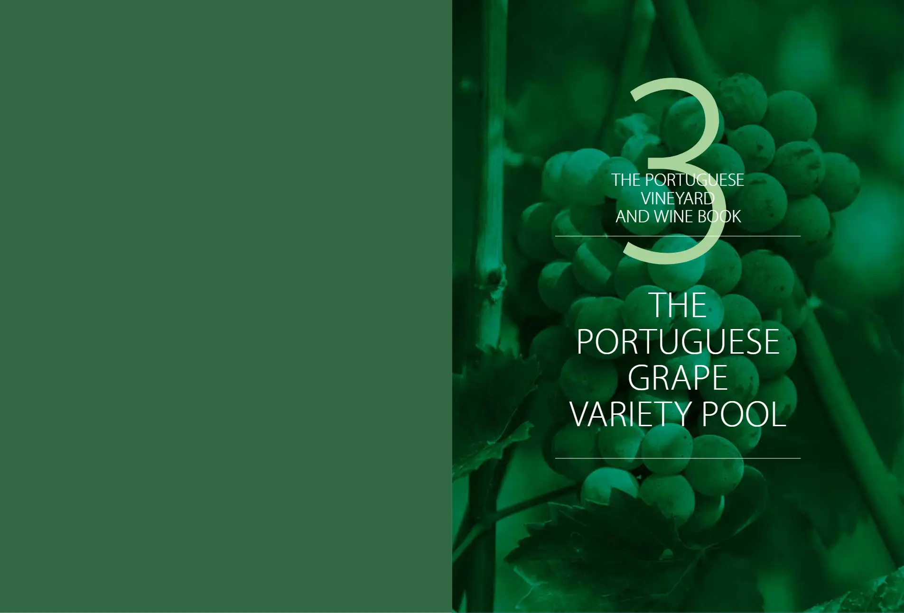
Text · Pages 30–31
3THE PORTUGUESE VINEYARD AND WINE BOOK THE PORTUGUESE GRAPE VARIETY POOL
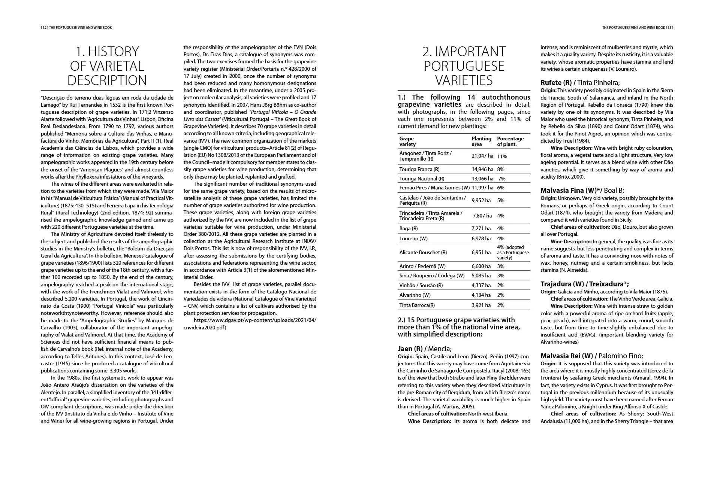
Text · Pages 32–33
1. HISTORY OF VARIETAL DESCRIPTION “Descrição do terreno duas léguas em roda da cidade de Lamego” by Rui Fernandes in 1532 is the first known Portuguese description of grape varieties. In 171,2 Vinzenso Alarte followed with “Agricultura das Vinhas”, Lisbon, Oficina Real Deslandesiana. From 1790 to 1792, various authors published “Memória sobre a Cultura das Vinhas, e Manufactura do Vinho. Memórias da Agricultura”, Part II (1), Real Academia das Ciências de Lisboa, which provides a wide range of information on existing grape varieties. Many ampelographic works appeared in the 19th century before the onset of the “American Plagues” and almost countless works after the Phylloxera infestations of the vineyards. The wines of the different areas were evaluated in relation to the varieties from which they were made. Vila Maior in his “Manual de Viticultura Prática” (Manual of Practical Viticulture) (1875: 430–515) and Ferreira Lapa in his Tecnologia Rural” (Rural Technology) (2nd edition, 1874: 92) summarised the ampelographic knowledge gained and came up with 220 different Portuguese varieties at the time. The Ministry of Agriculture devoted itself tirelessly to the subject and published the results of the ampelographic studies in the Ministry’s bulletin, the “Boletim da Direcção Geral da Agricultura”. In this bulletin, Meneses’ catalogue of grape varieties (1896/1900) lists 320 references for different grape varieties up to the end of the 18th century, with a further 100 recorded up to 1850. By the end of the century, ampelography reached a peak on the international stage, with the work of the Frenchmen Vialat and Valmorel, who described 5,200 varieties. In Portugal, the work of Cincinnato da Costa (1900) “Portugal Vinícola” was particularly noteworkthtynoteworthy. However, reference should also be made to the “Ampelographic Studies” by Marques de Carvalho (1903), collaborator of the important ampelography of Vialat and Valmorel. At that time, the Academy of Sciences did not have sufficient financial means to publish de Carvalho’s book (Ref. internal note of the Academy, according to Telles Antunes). In this context, José de Lencastre (1945) since he produced a catalogue of viticultural publications containing some 3,305 works. In the 1980s, the first systematic work to appear was João Antero Araújo’s dissertation on the varieties of the Alentejo. In parallel, a simplified inventory of the 341 different “official” grapevine varieties, including photographs and OIV-compliant descriptions, was made under the direction of the IVV (Instituto da Vinha e do Vinho – Institute of Vine and Wine) for all wine-growing regions in Portugal. Under
the responsibility of the ampelographer of the EVN (Dois Portos), Dr. Eiras Dias, a catalogue of synonyms was compiled. The two exercises formed the basis for the grapevine variety register (Ministerial Order/Portaria n.º 428/2000 of 17 July) created in 2000, once the number of synonyms had been reduced and many homonymous designations had been eliminated. In the meantime, under a 2005 project on molecular analysis, all varieties were profiled and 17 synonyms identified. In 2007, Hans Jörg Böhm as co-author and coordinator, published ”Portugal Vitícola – O Grande Livro das Castas” (Viticultural Portugal – The Great Book of Grapevine Varieties). It describes 70 grape varieties in detail according to all known criteria, including geographical relevance (IVV). The new common organization of the markets (single CMO) for viticultural products−Article 81(2) of Regulation (EU) No 1308/2013 of the European Parliament and of the Council−made it compulsory for member states to classify grape varieties for wine production, determining that only these may be planted, replanted and grafted. The significant number of traditional synonyms used for the same grape variety, based on the results of microsatellite analysis of these grape varieties, has limited the number of grape varieties authorized for wine production. These grape varieties, along with foreign grape varieties authorized by the IVV, are now included in the list of grape varieties suitable for wine production, under Ministerial Order 380/2012. All these grape varieties are planted in a collection at the Agricultural Research Institute at INIAV/ Dois Portos. This list is now of responsibility of the IVV, I.P., after assessing the submissions by the certifying bodies, associations and federations representing the wine sector, in accordance with Article 3(1) of the aforementioned Ministerial Order. Besides the IVV list of grape varieties, parallel documentation exists in the form of the Catálogo Nacional de Variedades de videira (National Catalogue of Vine Varieties) – CNV, which contains a list of cultivars authorised by the plant protection services for propagation. https://www.dgav.pt/wp-content/uploads/2021/04/ cnvideira2020.pdf )
2. IMPORTANT PORTUGUESE VARIETIES
1.) The following 14 autochthonous grapevine varieties are described in detail, with photographs, in the following pages, since each one represents between 2% and 11% of current demand for new plantings:
Grape variety Aragonez / Tinta Roriz / Tempranillo (R)
Planting Porcentage
area
of plant.
21,047 ha 11%
Touriga Franca (R) Touriga Nacional (R)
14,946 ha 8% 13,066 ha 7%
Fernão Pires / Maria Gomes (W) 11,997 ha 6%
Castelão / João de Santarém / Periquita (R)
9,952 ha
5%
Trincadeira / Tinta Amarela / Trincadeira Preta (R)
7,807 ha 4%
Baga (R)
7,271 ha 4%
Loureiro (W) Alicante Bouschet (R) Arinto / Pedernã (W)
6,978 ha 6,951 ha 6,600 ha
4% 4% (adopted as a Portuguese variety) 3%
Síria / Roupeiro / Códega (W) 5,085 ha 3%
Vinhão / Sousão (R)
4,337 ha 2%
Alvarinho (W)
4,134 ha 2%
Tinta Barroca(R)
3,921 ha 2%
2.) 15 Portuguese grape varieties with more than 1% of the national vine area, with simplified description:
Jaen (R) / Mencia; Origin: Spain, Castile and Leon (Bierzo). Peñin (1997) conjectures that this variety may have come from Aquitaine via the Caminho de Santiago de Compostela. Itacyl (2008: 165) is of the view that both Strabo and later Pliny the Elder were referring to this variety when they described viticulture in the pre-Roman city of Bergidum, from which Bierzo's name is derived. The varietal variability is much higher in Spain than in Portugal (A. Martins, 2005). Chief areas of cultivation: North-west Iberia. Wine Description: Its aroma is both delicate and
intense, and is reminiscent of mulberries and myrtle, which makes it a quality variety. Despite its rusticity, it is a valuable variety, whose aromatic properties have stamina and lend its wines a certain uniqueness (V. Loureiro). Rufete (R) / Tinta Pinheira; Origin: This variety possibly originated in Spain in the Sierra de Francia, South of Salamanca, and inland in the North Region of Portugal. Rebello da Fonseca (1790) knew this variety by one of its synonyms. It was described by Vila Maior who used the historical synonym, Tinta Pinheira, and by Rebello da Silva (1890) and Count Odart (1874), who took it for the Pinot Aigret, an opinion which was contradicted by Truel (1984). Wine Description: Wine with bright ruby colouration, floral aroma, a vegetal taste and a light structure. Very low ageing potential. It serves as a blend wine with other Dão varieties, which give it something by way of aroma and acidity (Brito, 2000). Malvasia Fina (W)*/ Boal B; Origin: Unknown. Very old variety, possibly brought by the Romans, or perhaps of Greek origin, according to Count Odart (1874), who brought the variety from Madeira and compared it with varieties found in Sicily. Chief areas of cultivation: Dão, Douro, but also grown all over Portugal. Wine Description: In general, the quality is as fine as its name suggests, but less penetrating and complex in terms of aroma and taste. It has a convincing nose with notes of wax, honey, nutmeg and a certain smokiness, but lacks stamina (N. Almeida). Trajadura (W) / Treixadura*; Origin: Galicia and Minho, according to Vila Maior (1875). Chief areas of cultivation: The Vinho Verde area, Galicia. Wine Description: Wine with intense straw to golden color with a powerful aroma of ripe orchard fruits (apple, pear, peach), well integrated into a warm, round, smooth taste, but from time to time slightly unbalanced due to insufficient acid (EVAG). (important blending variety for Alvarinho-wines) Malvasia Rei (W) / Palomino Fino; Origin: It is supposed that this variety was introduced to the area where it is mostly highly concentrated (Jerez de la Frontera) by seafaring Greek merchants (Amaral, 1994). In fact, the variety exists in Cyprus. It was first brought to Portugal in the previous millennium because of its unusually high yield. The variety must have been named after Fernan Yáñez Palomino, a Knight under King Alfonso X of Castile. Chief areas of cultivation: As Sherry: South-West Andalusia (11,000 ha), and in the Sherry Triangle – that area
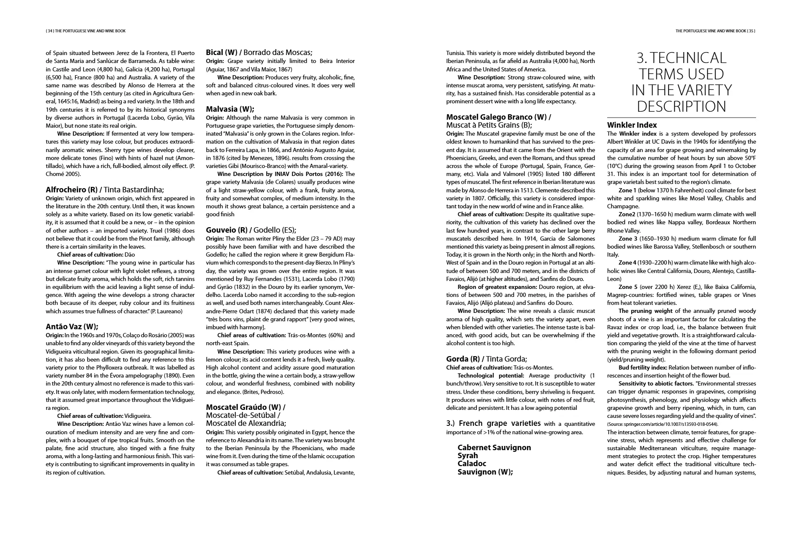
Text · Pages 34–35
of Spain situated between Jerez de la Frontera, El Puerto de Santa Maria and Sanlúcar de Barrameda. As table wine: in Castile and Leon (4,800 ha), Galicia (4,200 ha), Portugal (6,500 ha), France (800 ha) and Australia. A variety of the same name was described by Alonso de Herrera at the beginning of the 15th century (as cited in Agricultura General, 1645:16, Madrid) as being a red variety. In the 18th and 19th centuries it is referred to by its historical synonyms by diverse authors in Portugal (Lacerda Lobo, Gyrão, Vila Maior), but none state its real origin. Wine Description: If fermented at very low temperatures this variety may lose colour, but produces extraordinarily aromatic wines. Sherry type wines develop clearer, more delicate tones (Fino) with hints of hazel nut (Amontillado), which have a rich, full-bodied, almost oily effect. (P. Chomé 2005). Alfrocheiro (R) / Tinta Bastardinha; Origin: Variety of unknown origin, which first appeared in the literature in the 20th century. Until then, it was known solely as a white variety. Based on its low genetic variability, it is assumed that it could be a new, or – in the opinion of other authors – an imported variety. Truel (1986) does not believe that it could be from the Pinot family, although there is a certain similarity in the leaves. Chief areas of cultivation: Dão Wine Description: “The young wine in particular has an intense garnet colour with light violet reflexes, a strong but delicate fruity aroma, which holds the soft, rich tannins in equilibrium with the acid leaving a light sense of indulgence. With ageing the wine develops a strong character both because of its deeper, ruby colour and its fruitiness which assumes true fullness of character.” (P. Laureano) Antão Vaz (W); Origin: In the 1960s and 1970s, Colaço do Rosário (2005) was unable to find any older vineyards of this variety beyond the Vidigueira viticultural region. Given its geographical limitation, it has also been difficult to find any reference to this variety prior to the Phylloxera outbreak. It was labelled as variety number 84 in the Évora ampelography (1890). Even in the 20th century almost no reference is made to this variety. It was only later, with modern fermentation technology, that it assumed great importance throughout the Vidigueira region. Chief areas of cultivation: Vidigueira. Wine Description: Antão Vaz wines have a lemon colouration of medium intensity and are very fine and complex, with a bouquet of ripe tropical fruits. Smooth on the palate, fine acid structure, also tinged with a fine fruity aroma, with a long-lasting and harmonious finish. This variety is contributing to significant improvements in quality in its region of cultivation.
Bical (W) / Borrado das Moscas; Origin: Grape variety initially limited to Beira Interior (Aguiar, 1867 and Vila Maior, 1867) Wine Description: Produces very fruity, alcoholic, fine, soft and balanced citrus-coloured vines. It does very well when aged in new oak bark. Malvasia (W); Origin: Although the name Malvasia is very common in Portuguese grape varieties, the Portuguese simply denominated “Malvasia” is only grown in the Colares region. Information on the cultivation of Malvasia in that region dates back to Ferreira Lapa, in 1866, and António Augusto Aguiar, in 1876 (cited by Menezes, 1896). results from crossing the varieties Gibi (Mourisco-Branco) with the Amaral-variety. Wine Description by INIAV Dois Portos (2016): The grape variety Malvasia (de Colares) usually produces wine of a light straw-yellow colour, with a frank, fruity aroma, fruity and somewhat complex, of medium intensity. In the mouth it shows great balance, a certain persistence and a good finish Gouveio (R) / Godello (ES); Origin: The Roman writer Pliny the Elder (23 – 79 AD) may possibly have been familiar with and have described the Godello; he called the region where it grew Bergidum Flavium which corresponds to the present-day Bierzo. In Pliny’s day, the variety was grown over the entire region. It was mentioned by Ruy Fernandes (1531), Lacerda Lobo (1790) and Gyrão (1832) in the Douro by its earlier synonym, Verdelho. Lacerda Lobo named it according to the sub-region as well, and used both names interchangeably. Count Alexandre-Pierre Odart (1874) declared that this variety made “très bons vins, plaint de grand rapport” [very good wines, imbued with harmony]. Chief areas of cultivation: Trás-os-Montes (60%) and north-east Spain. Wine Description: This variety produces wine with a lemon colour; its acid content lends it a fresh, lively quality. High alcohol content and acidity assure good maturation in the bottle, giving the wine a certain body, a straw-yellow colour, and wonderful freshness, combined with nobility and elegance. (Brites, Pedroso). Moscatel Graúdo (W) / Moscatel-de-Setúbal / Moscatel de Alexandria; Origin: This variety possibly originated in Egypt, hence the reference to Alexandria in its name. The variety was brought to the Iberian Peninsula by the Phoenicians, who made wine from it. Even during the time of the Islamic occupation it was consumed as table grapes. Chief areas of cultivation: Setúbal, Andalusia, Levante,
Tunisia. This variety is more widely distributed beyond the Iberian Peninsula, as far afield as Australia (4,000 ha), North Africa and the United States of America. Wine Description: Strong straw-coloured wine, with intense muscat aroma, very persistent, satisfying. At maturity, has a sustained finish. Has considerable potential as a prominent dessert wine with a long life expectancy. Moscatel Galego Branco (W) / Muscat à Petits Grains (B); Origin: The Muscatel grapevine family must be one of the oldest known to humankind that has survived to the present day. It is assumed that it came from the Orient with the Phoenicians, Greeks, and even the Romans, and thus spread across the whole of Europe (Portugal, Spain, France, Germany, etc). Viala and Valmorel (1905) listed 180 different types of muscatel. The first reference in Iberian literature was made by Alonso de Herrera in 1513. Clemente described this variety in 1807. Officially, this variety is considered important today in the new world of wine and in France alike. Chief areas of cultivation: Despite its qualitative superiority, the cultivation of this variety has declined over the last few hundred years, in contrast to the other large berry muscatels described here. In 1914, Garcia de Salomones mentioned this variety as being present in almost all regions. Today, it is grown in the North only; in the North and NorthWest of Spain and in the Douro region in Portugal at an altitude of between 500 and 700 meters, and in the districts of Favaios, Alijó (at higher altitudes), and Sanfins do Douro. Region of greatest expansion: Douro region, at elvations of between 500 and 700 metres, in the parishes of Favaios, Alijó (Alijó plateau) and Sanfins do Douro. Wine Description: The wine reveals a classic muscat aroma of high quality, which sets the variety apart, even when blended with other varieties. The intense taste is balanced, with good acids, but can be overwhelming if the alcohol content is too high. Gorda (R) / Tinta Gorda; Chief areas of cultivation: Trás-os-Montes. Technological potential: Average productivity (1 bunch/throw). Very sensitive to rot. It is susceptible to water stress. Under these conditions, berry shriveling is frequent. It produces wines with little colour, with notes of red fruit, delicate and persistent. It has a low ageing potential 3.) French grape varieties with a quantitative importance of >1% of the national wine-growing area. Cabernet Sauvignon Syrah Caladoc Sauvignon (W);
3. TECHNICAL TERMS USED IN THE VARIETY DESCRIPTION Winkler Index The Winkler index is a system developed by professors Albert Winkler at UC Davis in the 1940s for identifying the capacity of an area for grape growing and winemaking by the cumulative number of heat hours by sun above 50°F (10°C) during the growing season from April 1 to October 31. This index is an important tool for determination of grape varietals best suited to the region’s climate. Zone 1 (below 1370 h Fahrenheit) cool climate for best white and sparkling wines like Mosel Valley, Chablis and Champagne. Zone2 (1370–1650 h) medium warm climate with well bodied red wines like Nappa valley, Bordeaux Northern Rhone Valley. Zone 3 (1650–1930 h) medium warm climate for full bodied wines like Barossa Valley, Stellenbosch or southern Italy. Zone 4 (1930–2200 h) warm climate like with high alcoholic wines like Central California, Douro, Alentejo, CastillaLeon) Zone 5 (over 2200 h) Xerez (E,), like Baixa California, Magrep-countries: fortified wines, table grapes or Vines from heat tolerant varieties. The pruning weight of the annually pruned woody shoots of a vine is an important factor for calculating the Ravaz index or crop load, i.e., the balance between fruit yield and vegetative growth. It is a straightforward calculation comparing the yield of the vine at the time of harvest with the pruning weight in the following dormant period (yield/pruning weight). Bud fertility index: Relation between number of inflorescences and insertion height of the flower bud. Sensitivity to abiotic factors. "Environmental stresses can trigger dynamic responses in grapevines, comprising photosynthesis, phenology, and physiology which affects grapevine growth and berry ripening, which, in turn, can cause severe losses regarding yield and the quality of vines". (Source: springer.com/article/10.1007/s13593-018-0544). The interaction between climate, terroir features, for grapevine stress, which represents and effective challenge for sustainable Mediterranean viticulture, require management strategies to protect the crop. Higher temperatures and water deficit effect the traditional viticulture techniques. Besides, by adjusting natural and human systems,
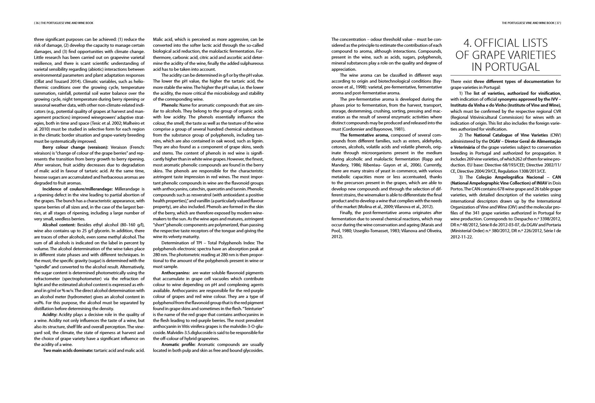
Text · Pages 36–37
three significant purposes can be achieved: (1) reduce the risk of damage, (2) develop the capacity to manage certain damages, and (3) find opportunities with climate change. Little research has been carried out on grapevine varietal resilience, and there is scant scientific understanding of varietal sensibility regarding (abiotic) interactions between environmental parameters and plant adaptation responses (Ollat and Touzard 2014). Climatic variables, such as heliothermic conditions over the growing cycle, temperature summation, rainfall, potential soil water balance over the growing cycle, night temperature during berry ripening or seasonal weather data, with other non-climate-related indicators (e.g., potential quality of grapes at harvest and management practices) improved winegrowers’ adaptive strategies, both in time and space (Tesic et al. 2002; Malheiro et al. 2010) must be studied in selective form for each region in the climatic border situation and grape-variety breeding must be systematically improved. Berry colour change (veraison): Veraison (French: véraison) is “change of colour of the grape berries” and represents the transition from berry growth to berry ripening. After veraison, fruit acidity decreases due to degradation of malic acid in favour of tartaric acid. At the same time, hexose sugars are accumulated and herbaceous aromas are degraded to fruit aromas. Incidence of coulure/millerandage: Millerandage is a ripening defect in the vine leading to partial abortion of the grapes. The bunch has a characteristic appearance, with sparse berries of all sizes and, in the case of the largest berries, at all stages of ripening, including a large number of very small, seedless berries. Alcohol content: Besides ethyl alcohol (80–160 g/l), wine also contains up to 25 g/l glycerin. In addition, there are traces of other alcohols, even some methyl alcohol. The sum of all alcohols is indicated on the label in percent by volume. The alcohol determination of the wine takes place in different state phases and with different techniques. In the must, the specific gravity (sugar) is determined with the “spindle” and converted to the alcohol result. Alternatively, the sugar content is determined photometrically using the refractometer (spectrophotometer) via the refraction of light and the estimated alcohol content is expressed as ethanol in g/ml or % w/v. The direct alcohol determination with an alcohol meter (hydrometer) gives an alcohol content in vol%. For this purpose, the alcohol must be separated by distillation before determining the density. Acidity: Acidity plays a decisive role in the quality of a wine. Acidity not only influences the taste of a wine, but also its structure, shelf life and overall perception. The vineyard soil, the climate, the state of ripeness at harvest and the choice of grape variety have a significant influence on the acidity of a wine. Two main acids dominate: tartaric acid and malic acid.
Malic acid, which is perceived as more aggressive, can be converted into the softer lactic acid through the so-called biological acid reduction, the malolactic fermentation. Furthermore, carbonic acid, citric acid and ascorbic acid determine the acidity of the wine, finally the added sulphureous acid has to be taken into account. The acidity can be determined in g/l or by the pH value. The lower the pH value, the higher the tartaric acid, the more stable the wine. The higher the pH value, i.e. the lower the acidity, the more critical the microbiology and stability of the corresponding wine. Phenols: Name for aromatic compounds that are similar to alcohols. They belong to the group of organic acids with low acidity. The phenols essentially influence the colour, the smell, the taste as well as the texture of the wine comprise a group of several hundred chemical substances from the substance group of polyphenols, including tannins, which are also contained in oak wood, such as lignin. They are also found as a component of grape skins, seeds and stems. The content of phenols in red wine is significantly higher than in white wine grapes. However, the finest, most aromatic phenolic compounds are found in the berry skins. The phenols are responsible for the characteristic astringent taste impression in red wines. The most important phenolic compounds in wine are the flavonoid groups with anthocyanins, catechin, quercetin and tannin. Phenolic compounds such as resveratrol (with antioxidant a positive health properties),”and vanillin (a particularly valued flavour property), are also included. Phenols are formed in the skin of the berry, which are therefore exposed by modern winemakers to the sun. As the wine ages and matures, astringent “short”phenolic components are polymerized, than passing the respective taste receptors of the tongue and giving the wine its velvety maturity. Determination of TPI – Total Polyphenols Index: The polyphenols electronic spectra have an absorption peak at 280 nm. The photometric reading at 280 nm is then proportional to the amount of the polyphenols present in wine or must sample. Anthocyanins: are water soluble flavonoid pigments that accumulate in grape cell vacuoles which contribute colour to wine depending on pH and complexing agents available. Anthocyanins are responsible for the red-purple colour of grapes and red wine colour. They are a type of polyphenol from the flavonoid group that is the red pigment found in grape skins and sometimes in the flesh. “Teinturier” is the name of the red grape that contains anthocyanins in the flesh leading to red-purple berries. The most prevalent anthocyanin in Vitis vinifera grapes is the malvidin-3-O-glucoside. Malvidin-3.5.diglucoside is said to be responsible for the off-colour of hybrid grapevines. Aromatic profile: Aromatic compounds are usually located in both pulp and skin as free and bound glycosides.
The concentration – odour threshold value – must be considered as the principle to estimate the contribution of each compound to aroma, although interactions. Compounds, present in the wine, such as acids, sugars, polyphenols, mineral substances play a role on the quality and degree of appreciation. The wine aroma can be classified in different ways according to origin and biotechnological conditions (Bayonove et al., 1998): varietal, pre-fermentative, fermentative aroma and post-fermentative aroma. The pre-fermentative aroma is developed during the phases prior to fermentation, from the harvest, transport, storage, destemming, crushing, sorting, pressing and maceration as the result of several enzymatic activities where distinct compounds may be produced and released into the must (Cordonnier and Bayonove, 1981). The fermentative aroma, composed of several compounds from different families, such as esters, aldehydes, cetones, alcohols, volatile acids and volatile phenols, originate through microorganisms present in the medium during alcoholic and malolactic fermentation (Rapp and Mandery, 1986; Riberéau- Gayon et al., 2006). Currently, there are many strains of yeast in commerce, with various metabolic capacities more or less accentuated, thanks to the precursors present in the grapes, which are able to develop new compounds and through the selection of different strains, the winemaker is able to differentiate the final product and to develop a wine that complies with the needs of the market (Molina et al., 2009; Vilanova et al., 2012). Finally, the post-fermentative aroma originates after fermentation due to several chemical reactions, which may occur during the wine conservation and ageing (Marais and Pool, 1980; Usseglio-Tomasset, 1983; Vilanova and Oliveira, 2012).
4. OFFICIAL LISTS OF GRAPE VARIETIES IN PORTUGAL There exist three different types of documentation for grape varieties in Portugal: 1) The list of varieties, authorized for vinification, with indication of official synonyms approved by the IVV – Instituto da Vinha e do Vinho (Institute of Vine and Wine), which must be confirmed by the respective regional CVR (Regional Vitivinicultural Commission) for wines with an indication of origin. This list also includes the foreign varieties authorized for vinification. 2) The National Catalogue of Vine Varieties (CNV) administered by the DGAV – Diretor Geral de Alimentação e Veterinária of the grape varieties subject to conservation breeding in Portugal and authorized for propagation. It includes 269 vine varieties, of which262 of them for wine production. EU base: Directive 68/193/CEE; Directive 2002/11/ CE, Directive 2004/29/CE, Regulation 1308/2013/CE. 3) The Coleção Ampelográfica Nacional – CAN (National Ampelographic Vine Collection) of INIAV in Dois Portos. The CAN contains 678 wine grape and 26 table grape varieties, with detailed description of the varieties using international descriptors drawn up by the International Organization of Vine and Wine (OIV) and the molecular profiles of the 341 grape varieties authorized in Portugal for wine production. Corresponds to: Despacho n.º 3398/2012, DR n.º 48/2012, Série II de 2012-03-07, da DGAV and Portaria (Ministerial Order) n.º 380/2012, DR n.º 226/2012, Série I de 2012-11-22.
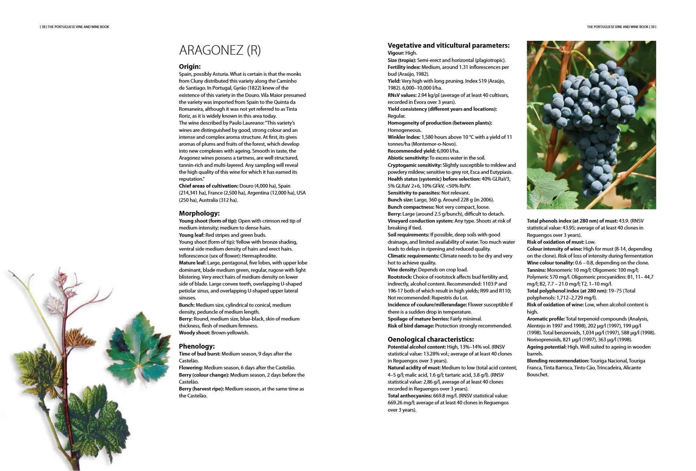
Text · Pages 38–39
ARAGONEZ (R) Origin: Spain, possibly Asturia. What is certain is that the monks from Cluny distributed this variety along the Caminho de Santiago. In Portugal, Gyrão (1822) knew of the existence of this variety in the Douro. Vila Maior presumed the variety was imported from Spain to the Quinta da Romaneira, although it was not yet referred to as Tinta Roriz, as it is widely known in this area today. The wine described by Paulo Laureano: “This variety’s wines are distinguished by good, strong colour and an intense and complex aroma structure. At first, its gives aromas of plums and fruits of the forest, which develop into new complexes with ageing. Smooth in taste, the Aragonez wines possess a tartness, are well structured, tannin-rich and multi-layered. Any sampling will reveal the high quality of this wine for which it has earned its reputation.” Chief areas of cultivation: Douro (4,000 ha), Spain (214,341 ha), France (2,500 ha), Argentina (12,000 ha), USA (250 ha), Australia (312 ha). Morphology: Young shoot (form of tip): Open with crimson red tip of medium intensity; medium to dense hairs. Young leaf: Red stripes and green buds. Young shoot (form of tip): Yellow with bronze shading, ventral side medium density of hairs and erect hairs. Inflorescence (sex of flower): Hermaphrodite. Mature leaf: Large, pentagonal, five lobes, with upper lobe dominant, blade medium green, regular, rugose with light blistering. Very erect hairs of medium density on lower side of blade. Large convex teeth, overlapping U-shaped petiolar sinus, and overlapping U-shaped upper lateral sinuses. Bunch: Medium size, cylindrical to conical, medium density, peduncle of medium length. Berry: Round, medium size, blue-black, skin of medium thickness, flesh of medium firmness. Woody shoot: Brown-yellowish. Phenology: Time of bud burst: Medium season, 9 days after the Castelão. Flowering: Medium season, 6 days after the Castelão. Berry (colour change): Medium season, 2 days before the Castelão. Berry (harvest ripe): Medium season, at the same time as the Castelão.
Vegetative and viticultural parameters: Vigour: High. Size (tropia): Semi-erect and horizontal (plagiotropic). Fertility index: Medium, around 1.31 inflorescences per bud (Araújo, 1982). Yield: Very high with long pruning. Index 519 (Araújo, 1982). 6,000–10,000 l/ha. RNsV values: 2.94 kg/pl (average of at least 40 cultivars, recorded in Évora over 3 years). Yield consistency (different years and locations): Regular. Homogeneity of production (between plants): Homogeneous. Winkler Index: 1,580 hours above 10 °C with a yield of 11 tonnes/ha (Montemor-o-Novo). Recommended yield: 6,000 l/ha. Abiotic sensitivity: To excess water in the soil. Cryptogamic sensitivity: Slightly susceptible to mildew and powdery mildew; sensitive to grey rot, Esca and Eutypiasis. Health status (systemic) before selection: 40% GLRaV3, 5% GLRaV 2+6, 10% GFkV, <50% RsPV. Sensitivity to parasites: Not relevant. Bunch size: Large, 360 g. Around 228 g (in 2006). Bunch compactness: Not very compact, loose. Berry: Large (around 2.5 g/bunch), difficult to detach. Vineyard conduction system: Any type. Shoots at risk of breaking if tied. Soil requirements: If possible, deep soils with good drainage, and limited availability of water. Too much water leads to delays in ripening and reduced quality. Climatic requirements: Climate needs to be dry and very hot to achieve quality. Vine density: Depends on crop load. Rootstock: Choice of rootstock affects bud fertility and, indirectly, alcohol content. Recommended: 1103 P and 196-17 both of which result in high yields; R99 and R110; Not recommended: Rupestris du Lot. Incidence of coulure/millerandage: Flower susceptible if there is a sudden drop in temperature. Spoilage of mature berries: Fairly minimal. Risk of bird damage: Protection strongly recommended. Oenological characteristics: Potential alcohol content: High, 13%–14% vol. (RNSV statistical value: 13.28% vol.; average of at least 40 clones in Reguengos over 3 years). Natural acidity of must: Medium to low (total acid content, 4–5 g/l; malic acid, 1.6 g/l; tartaric acid, 3.8 g/l). (RNSV statistical value: 2,86 g/l, average of at least 40 clones recorded in Reguengos over 3 years). Total anthocyanins: 669.8 mg/l. (RNSV statistical value: 669.26 mg/l; average of at least 40 clones in Reguengos over 3 years).
Total phenols index (at 280 nm) of must: 43.9. (RNSV statistical value: 43.95; average of at least 40 clones in Reguengos over 3 years). Risk of oxidation of must: Low. Colour intensity of wine: High for must (8-14, depending on the clone). Risk of loss of intensity during fermentation Wine colour tonality: 0.6 – 0.8, depending on the clone. Tannins: Monomeric 10 mg/l; Oligomeric 100 mg/l; Polymeric 570 mg/l. Oligomeric procyanidins: B1, 11– 44,7 mg/l; B2, 7.7 – 21.0 mg/l; T2, 1–10 mg/l. Total polyphenol index (at 280 nm): 19–75 (Total polyphenols: 1,712–2,729 mg/l). Risk of oxidation of wine: Low, when alcohol content is high. Aromatic profile: Total terpenoid compounds (Analysis, Alentejo in 1997 and 1998), 202 μg/l (1997), 199 μg/l (1998). Total benzenoids, 1,034 μg/l (1997), 588 μg/l (1998). Norisoprenoids, 821 μg/l (1997), 363 μg/l (1998). Ageing potential: High. Well suited to ageing in wooden barrels. Blending recommendation: Touriga Nacional, Touriga Franca, Tinta Barroca, Tinto Cão, Trincadeira, Alicante Bouschet.
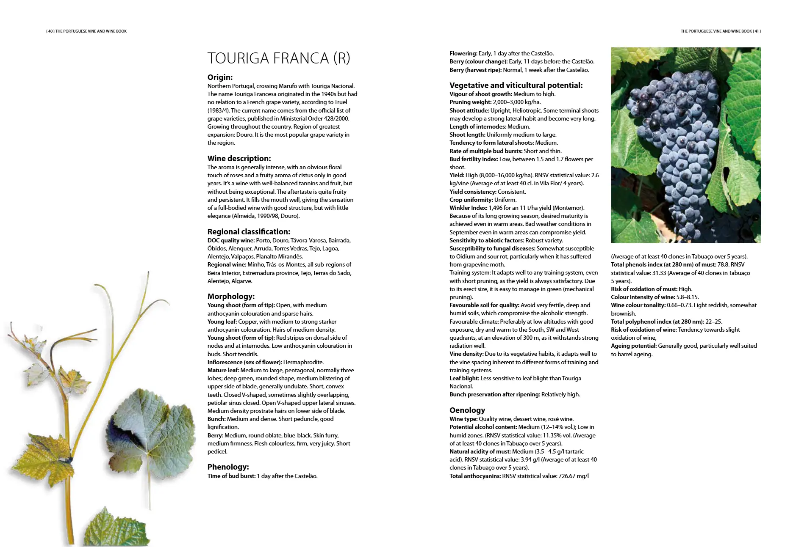
Text · Pages 40–41
TOURIGA FRANCA (R) Origin: Northern Portugal, crossing Marufo with Touriga Nacional. The name Touriga Francesa originated in the 1940s but had no relation to a French grape variety, according to Truel (1983/4). The current name comes from the official list of grape varieties, published in Ministerial Order 428/2000. Growing throughout the country. Region of greatest expansion: Douro. It is the most popular grape variety in the region. Wine description: The aroma is generally intense, with an obvious floral touch of roses and a fruity aroma of cistus only in good years. It’s a wine with well-balanced tannins and fruit, but without being exceptional. The aftertaste is quite fruity and persistent. It fills the mouth well, giving the sensation of a full-bodied wine with good structure, but with little elegance (Almeida, 1990/98, Douro). Regional classification: DOC quality wine: Porto, Douro, Távora-Varosa, Bairrada, Óbidos, Alenquer, Arruda, Torres Vedras, Tejo, Lagoa, Alentejo, Valpaços, Planalto Mirandês. Regional wine: Minho, Trás-os-Montes, all sub-regions of Beira Interior, Estremadura province, Tejo, Terras do Sado, Alentejo, Algarve. Morphology: Young shoot (form of tip): Open, with medium anthocyanin colouration and sparse hairs. Young leaf: Copper, with medium to strong starker anthocyanin colouration. Hairs of medium density. Young shoot (form of tip): Red stripes on dorsal side of nodes and at internodes. Low anthocyanin colouration in buds. Short tendrils. Inflorescence (sex of flower): Hermaphrodite. Mature leaf: Medium to large, pentagonal, normally three lobes; deep green, rounded shape, medium blistering of upper side of blade, generally undulate. Short, convex teeth. Closed V-shaped, sometimes slightly overlapping, petiolar sinus closed. Open V-shaped upper lateral sinuses. Medium density prostrate hairs on lower side of blade. Bunch: Medium and dense. Short peduncle, good lignification. Berry: Medium, round oblate, blue-black. Skin furry, medium firmness. Flesh colourless, firm, very juicy. Short pedicel. Phenology: Time of bud burst: 1 day after the Castelão.
Flowering: Early, 1 day after the Castelão. Berry (colour change): Early, 11 days before the Castelão. Berry (harvest ripe): Normal, 1 week after the Castelão. Vegetative and viticultural potential: Vigour of shoot growth: Medium to high. Pruning weight: 2,000–3,000 kg/ha. Shoot attitude: Upright, Heliotropic. Some terminal shoots may develop a strong lateral habit and become very long. Length of internodes: Medium. Shoot length: Uniformly medium to large. Tendency to form lateral shoots: Medium. Rate of multiple bud bursts: Short and thin. Bud fertility index: Low, between 1.5 and 1.7 flowers per shoot. Yield: High (8,000–16,000 kg/ha). RNSV statistical value: 2.6 kg/vine (Average of at least 40 cl. in Vila Flor/ 4 years). Yield consistency: Consistent. Crop uniformity: Uniform. Winkler Index: 1,496 for an 11 t/ha yield (Montemor). Because of its long growing season, desired maturity is achieved even in warm areas. Bad weather conditions in September even in warm areas can compromise yield. Sensitivity to abiotic factors: Robust variety. Susceptibility to fungal diseases: Somewhat susceptible to Oidium and sour rot, particularly when it has suffered from grapevine moth. Training system: It adapts well to any training system, even with short pruning, as the yield is always satisfactory. Due to its erect size, it is easy to manage in green (mechanical pruning). Favourable soil for quality: Avoid very fertile, deep and humid soils, which compromise the alcoholic strength. Favourable climate: Preferably at low altitudes with good exposure, dry and warm to the South, SW and West quadrants, at an elevation of 300 m, as it withstands strong radiation well. Vine density: Due to its vegetative habits, it adapts well to the vine spacing inherent to different forms of training and training systems. Leaf blight: Less sensitive to leaf blight than Touriga Nacional. Bunch preservation after ripening: Relatively high. Oenology Wine type: Quality wine, dessert wine, rosé wine. Potential alcohol content: Medium (12–14% vol.); Low in humid zones. (RNSV statistical value: 11.35% vol. (Average of at least 40 clones in Tabuaço over 5 years). Natural acidity of must: Medium (3.5– 4.5 g/l tartaric acid). RNSV statistical value: 3.94 g/l (Average of at least 40 clones in Tabuaço over 5 years). Total anthocyanins: RNSV statistical value: 726.67 mg/l
(Average of at least 40 clones in Tabuaço over 5 years). Total phenols index (at 280 nm) of must: 78.8. RNSV statistical value: 31.33 (Average of 40 clones in Tabuaço 5 years). Risk of oxidation of must: High. Colour intensity of wine: 5.8–8.15. Wine colour tonality: 0.66–0.73. Light reddish, somewhat brownish. Total polyphenol index (at 280 nm): 22–25. Risk of oxidation of wine: Tendency towards slight oxidation of wine, Ageing potential: Generally good, particularly well suited to barrel ageing.
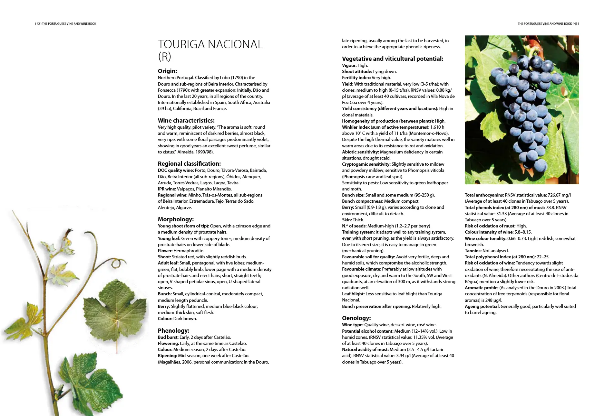
Text · Pages 42–43
TOURIGA NACIONAL (R) Origin: Northern Portugal. Classified by Lobo (1790) in the Douro and sub-regions of Beira Interior. Characterised by Fonsecca (1790); with greater expansion: Initially, Dão and Douro. In the last 20 years, in all regions of the country. Internationally established in Spain, South Africa, Australia (39 ha), California, Brazil and France. Wine characteristics: Very high quality, pilot variety. “The aroma is soft, round and warm, reminiscent of dark red berries, almost black, very ripe, with some floral passages predominantly violet, showing in good years an excellent sweet perfume, similar to cistus.” Almeida, 1990/98). Regional classification: DOC quality wine: Porto, Douro, Távora-Varosa, Bairrada, Dão, Beira Interior (all sub-regions), Óbidos, Alenquer, Arruda, Torres Vedras, Lagos, Lagoa, Tavira. IPR wine: Valpaços, Planalto Mirandês. Regional wine: Minho, Trás-os-Montes, all sub-regions of Beira Interior, Estremadura, Tejo, Terras do Sado, Alentejo, Algarve. Morphology: Young shoot (form of tip): Open, with a crimson edge and a medium density of prostrate hairs. Young leaf: Green with coppery tones, medium density of prostrate hairs on lower side of blade. Flower: Hermaphrodite. Shoot: Striated red, with slightly reddish buds. Adult leaf: Small, pentagonal, with five lobes; mediumgreen, flat, bubbly limb; lower page with a medium density of prostrate hairs and erect hairs; short, straight teeth; open, V-shaped petiolar sinus, open, U-shaped lateral sinuses. Bunch: Small, cylindrical-conical, moderately compact, medium length peduncle. Berry: Slightly flattened, medium blue-black colour; medium-thick skin, soft flesh. Colour: Dark brown. Phenology: Bud burst: Early, 2 days after Castelão. Flowering: Early, at the same time as Castelão. Colour: Medium season, 2 days after Castelão. Ripening: Mid-season, one week after Castelão. (Magalhães, 2006, personal communication: in the Douro,
late ripening, usually among the last to be harvested, in order to achieve the appropriate phenolic ripeness. Vegetative and viticultural potential: Vigour: High. Shoot attitude: Lying down. Fertility index: Very high. Yield: With traditional material, very low (3-5 t/ha); with clones, medium to high (8-15 t/ha). RNSV values: 0.88 kg/ pl (average of at least 40 cultivars, recorded in Vila Nova de Foz Côa over 4 years). Yield consistency (different years and locations): High in clonal materials. Homogeneity of production (between plants): High. Winkler Index (sum of active temperatures): 1,610 h above 10° C with a yield of 11 t/ha (Montemor-o-Novo). Despite the high thermal value, the variety matures well in warm areas due to its resistance to rot and oxidation. Abiotic sensitivity: Magnesium deficiency in certain situations, drought scald. Cryptogamic sensitivity: Slightly sensitive to mildew and powdery mildew; sensitive to Phomopsis viticola (Phomopsis cane and leaf spot). Sensitivity to pests: Low sensitivity to green leafhopper and moth. Bunch size: Small and some medium (95-250 g). Bunch compactness: Medium compact. Berry: Small (0.9-1.8 g), varies according to clone and environment, difficult to detach. Skin: Thick. N.º of seeds: Medium-high (1.2–2.7 per berry) Training system: It adapts well to any training system, even with short pruning, as the yield is always satisfactory. Due to its erect size, it is easy to manage in green (mechanical pruning). Favourable soil for quality: Avoid very fertile, deep and humid soils, which compromise the alcoholic strength. Favourable climate: Preferably at low altitudes with good exposure, dry and warm to the South, SW and West quadrants, at an elevation of 300 m, as it withstands strong radiation well. Leaf blight: Less sensitive to leaf blight than Touriga Nacional. Bunch preservation after ripening: Relatively high. Oenology: Wine type: Quality wine, dessert wine, rosé wine. Potential alcohol content: Medium (12–14% vol.); Low in humid zones. (RNSV statistical value: 11.35% vol. (Average of at least 40 clones in Tabuaço over 5 years). Natural acidity of must: Medium (3.5– 4.5 g/l tartaric acid). RNSV statistical value: 3.94 g/l (Average of at least 40 clones in Tabuaço over 5 years).
Total anthocyanins: RNSV statistical value: 726.67 mg/l (Average of at least 40 clones in Tabuaço over 5 years). Total phenols index (at 280 nm) of must: 78.8. RNSV statistical value: 31.33 (Average of at least 40 clones in Tabuaço over 5 years). Risk of oxidation of must: High. Colour intensity of wine: 5.8–8.15. Wine colour tonality: 0.66–0.73. Light reddish, somewhat brownish. Tannins: Not analysed. Total polyphenol index (at 280 nm): 22–25. Risk of oxidation of wine: Tendency towards slight oxidation of wine, therefore necessitating the use of antioxidants (N. Almeida). Other authors (Centro de Estudos da Régua) mention a slightly lower risk. Aromatic profile: (As analysed in the Douro in 2003.) Total concentration of free terpenoids (responsible for floral aromas) is 248 μg/l. Ageing potential: Generally good, particularly well suited to barrel ageing.
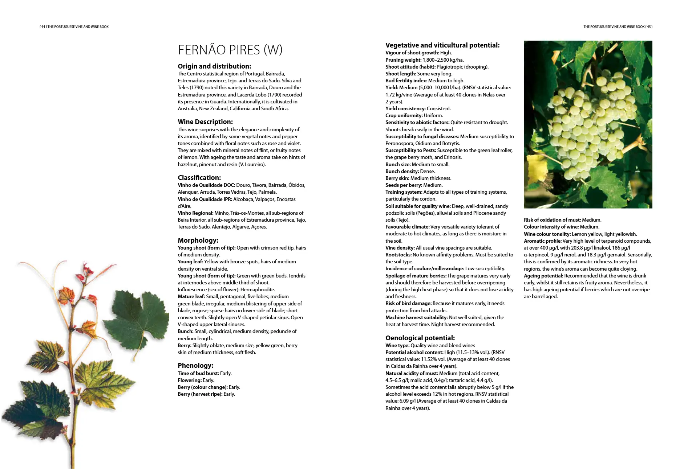
Text · Pages 44–45
FERNÃO PIRES (W) Origin and distribution: The Centro statistical region of Portugal. Bairrada, Estremadura province, Tejo. and Terras do Sado. Silva and Teles (1790) noted this variety in Bairrada, Douro and the Estremadura province, and Lacerda Lobo (1790) recorded its presence in Guarda. Internationally, it is cultivated in Australia, New Zealand, California and South Africa. Wine Description: This wine surprises with the elegance and complexity of its aroma, identified by some vegetal notes and pepper tones combined with floral notes such as rose and violet. They are mixed with mineral notes of flint, or fruity notes of lemon. With ageing the taste and aroma take on hints of hazelnut, pinenut and resin (V. Loureiro). Classification: Vinho de Qualidade DOC: Douro, Távora, Bairrada, Óbidos, Alenquer, Arruda, Torres Vedras, Tejo, Palmela. Vinho de Qualidade IPR: Alcobaça, Valpaços, Encostas d'Aire. Vinho Regional: Minho, Trás-os-Montes, all sub-regions of Beira Interior, all sub-regions of Estremadura province, Tejo, Terras do Sado, Alentejo, Algarve, Açores. Morphology: Young shoot (form of tip): Open with crimson red tip, hairs of medium density. Young leaf: Yellow with bronze spots, hairs of medium density on ventral side. Young shoot (form of tip): Green with green buds. Tendrils at internodes above middle third of shoot. Inflorescence (sex of flower): Hermaphrodite. Mature leaf: Small, pentagonal, five lobes; medium green blade, irregular, medium blistering of upper side of blade, rugose; sparse hairs on lower side of blade; short convex teeth. Slightly open V-shaped petiolar sinus. Open V-shaped upper lateral sinuses. Bunch: Small, cylindrical, medium density, peduncle of medium length. Berry: Slightly oblate, medium size, yellow green, berry skin of medium thickness, soft flesh. Phenology: Time of bud burst: Early. Flowering: Early. Berry (colour change): Early. Berry (harvest ripe): Early.
Vegetative and viticultural potential: Vigour of shoot growth: High. Pruning weight: 1,800–2,500 kg/ha. Shoot attitude (habit): Plagiotropic (drooping). Shoot length: Some very long. Bud fertility index: Medium to high. Yield: Medium (5,000–10,000 l/ha). (RNSV statistical value: 1.72 kg/vine (Average of at least 40 clones in Nelas over 2 years). Yield consistency: Consistent. Crop uniformity: Uniform. Sensitivity to abiotic factors: Quite resistant to drought. Shoots break easily in the wind. Susceptibility to fungal diseases: Medium susceptibility to Peronospora, Oidium and Botrytis. Susceptibility to Pests: Susceptible to the green leaf roller, the grape berry moth, and Erinosis. Bunch size: Medium to small. Bunch density: Dense. Berry skin: Medium thickness. Seeds per berry: Medium. Training system: Adapts to all types of training systems, particularly the cordon. Soil suitable for quality wine: Deep, well-drained, sandy podzolic soils (Pegões), alluvial soils and Pliocene sandy soils (Tejo). Favourable climate: Very versatile variety tolerant of moderate to hot climates, as long as there is moisture in the soil. Vine density: All usual vine spacings are suitable. Rootstocks: No known affinity problems. Must be suited to the soil type. Incidence of coulure/millerandage: Low susceptibility. Spoilage of mature berries: The grape matures very early and should therefore be harvested before overripening (during the high heat phase) so that it does not lose acidity and freshness. Risk of bird damage: Because it matures early, it needs protection from bird attacks. Machine harvest suitability: Not well suited, given the heat at harvest time. Night harvest recommended. Oenological potential: Wine type: Quality wine and blend wines Potential alcohol content: High (11.5–13% vol.). (RNSV statistical value: 11.52% vol. (Average of at least 40 clones in Caldas da Rainha over 4 years). Natural acidity of must: Medium (total acid content, 4.5–6.5 g/l; malic acid, 0.4g/l; tartaric acid, 4.4 g/l). Sometimes the acid content falls abruptly below 5 g/l if the alcohol level exceeds 12% in hot regions. RNSV statistical value: 6.09 g/l (Average of at least 40 clones in Caldas da Rainha over 4 years).
Risk of oxidation of must: Medium. Colour intensity of wine: Medium. Wine colour tonality: Lemon yellow, light yellowish. Aromatic profile: Very high level of terpenoid compounds, at over 400 μg/l, with 203.8 μg/l linalool, 186 μg/l α-terpineol, 9 μg/l nerol, and 18.3 μg/l gernaiol. Sensorially, this is confirmed by its aromatic richness. In very hot regions, the wine’s aroma can become quite cloying. Ageing potential: Recommended that the wine is drunk early, whilst it still retains its fruity aroma. Nevertheless, it has high ageing potential if berries which are not overripe are barrel aged.
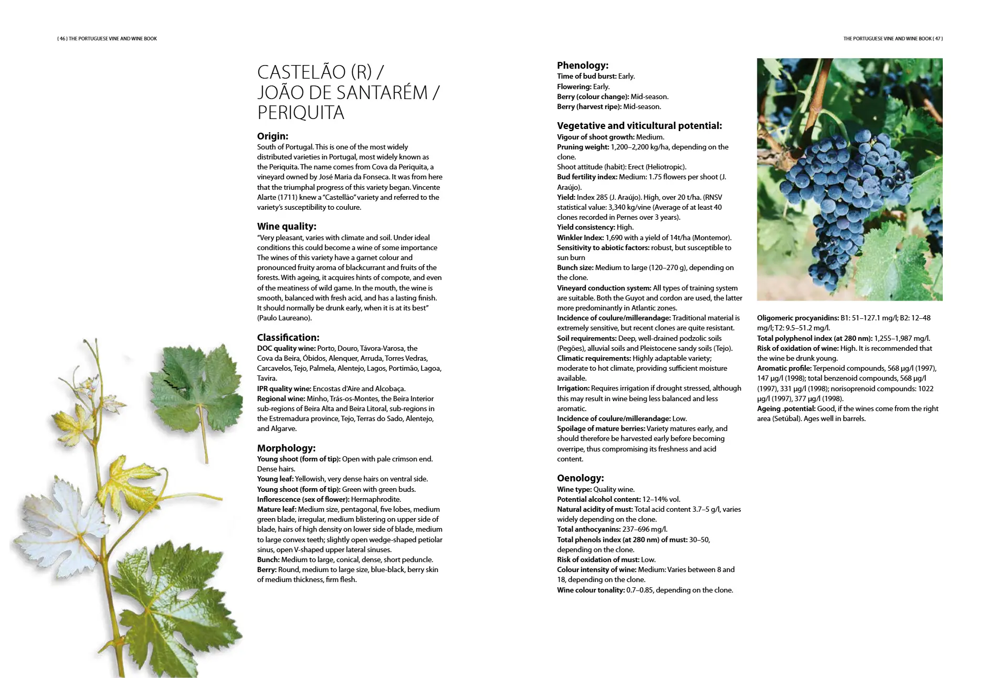
Text · Pages 46–47
CASTELÃO (R) / JOÃO DE SANTARÉM / PERIQUITA Origin: South of Portugal. This is one of the most widely distributed varieties in Portugal, most widely known as the Periquita. The name comes from Cova da Periquita, a vineyard owned by José Maria da Fonseca. It was from here that the triumphal progress of this variety began. Vincente Alarte (1711) knew a “Castellão” variety and referred to the variety’s susceptibility to coulure. Wine quality: “Very pleasant, varies with climate and soil. Under ideal conditions this could become a wine of some importance The wines of this variety have a garnet colour and pronounced fruity aroma of blackcurrant and fruits of the forests. With ageing, it acquires hints of compote, and even of the meatiness of wild game. In the mouth, the wine is smooth, balanced with fresh acid, and has a lasting finish. It should normally be drunk early, when it is at its best” (Paulo Laureano). Classification: DOC quality wine: Porto, Douro, Távora-Varosa, the Cova da Beira, Óbidos, Alenquer, Arruda, Torres Vedras, Carcavelos, Tejo, Palmela, Alentejo, Lagos, Portimão, Lagoa, Tavira. IPR quality wine: Encostas d'Aire and Alcobaça. Regional wine: Minho, Trás-os-Montes, the Beira Interior sub-regions of Beira Alta and Beira Litoral, sub-regions in the Estremadura province, Tejo, Terras do Sado, Alentejo, and Algarve. Morphology: Young shoot (form of tip): Open with pale crimson end. Dense hairs. Young leaf: Yellowish, very dense hairs on ventral side. Young shoot (form of tip): Green with green buds. Inflorescence (sex of flower): Hermaphrodite. Mature leaf: Medium size, pentagonal, five lobes, medium green blade, irregular, medium blistering on upper side of blade, hairs of high density on lower side of blade, medium to large convex teeth; slightly open wedge-shaped petiolar sinus, open V-shaped upper lateral sinuses. Bunch: Medium to large, conical, dense, short peduncle. Berry: Round, medium to large size, blue-black, berry skin of medium thickness, firm flesh.
Phenology: Time of bud burst: Early. Flowering: Early. Berry (colour change): Mid-season. Berry (harvest ripe): Mid-season. Vegetative and viticultural potential: Vigour of shoot growth: Medium. Pruning weight: 1,200–2,200 kg/ha, depending on the clone. Shoot attitude (habit): Erect (Heliotropic). Bud fertility index: Medium: 1.75 flowers per shoot (J. Araújo). Yield: Index 285 (J. Araújo). High, over 20 t/ha. (RNSV statistical value: 3,340 kg/vine (Average of at least 40 clones recorded in Pernes over 3 years). Yield consistency: High. Winkler Index: 1,690 with a yield of 14t/ha (Montemor). Sensitivity to abiotic factors: robust, but susceptible to sun burn Bunch size: Medium to large (120–270 g), depending on the clone. Vineyard conduction system: All types of training system are suitable. Both the Guyot and cordon are used, the latter more predominantly in Atlantic zones. Incidence of coulure/millerandage: Traditional material is extremely sensitive, but recent clones are quite resistant. Soil requirements: Deep, well-drained podzolic soils (Pegões), alluvial soils and Pleistocene sandy soils (Tejo). Climatic requirements: Highly adaptable variety; moderate to hot climate, providing sufficient moisture available. Irrigation: Requires irrigation if drought stressed, although this may result in wine being less balanced and less aromatic. Incidence of coulure/millerandage: Low. Spoilage of mature berries: Variety matures early, and should therefore be harvested early before becoming overripe, thus compromising its freshness and acid content. Oenology: Wine type: Quality wine. Potential alcohol content: 12–14% vol. Natural acidity of must: Total acid content 3.7–5 g/l, varies widely depending on the clone. Total anthocyanins: 237–696 mg/l. Total phenols index (at 280 nm) of must: 30–50, depending on the clone. Risk of oxidation of must: Low. Colour intensity of wine: Medium: Varies between 8 and 18, depending on the clone. Wine colour tonality: 0.7–0.85, depending on the clone.
Oligomeric procyanidins: B1: 51–127.1 mg/l; B2: 12–48 mg/l; T2: 9.5–51.2 mg/l. Total polyphenol index (at 280 nm): 1,255–1,987 mg/l. Risk of oxidation of wine: High. It is recommended that the wine be drunk young. Aromatic profile: Terpenoid compounds, 568 μg/l (1997), 147 μg/l (1998); total benzenoid compounds, 568 μg/l (1997), 331 μg/l (1998); norisoprenoid compounds: 1022 μg/l (1997), 377 μg/l (1998). Ageing .potential: Good, if the wines come from the right area (Setúbal). Ages well in barrels.
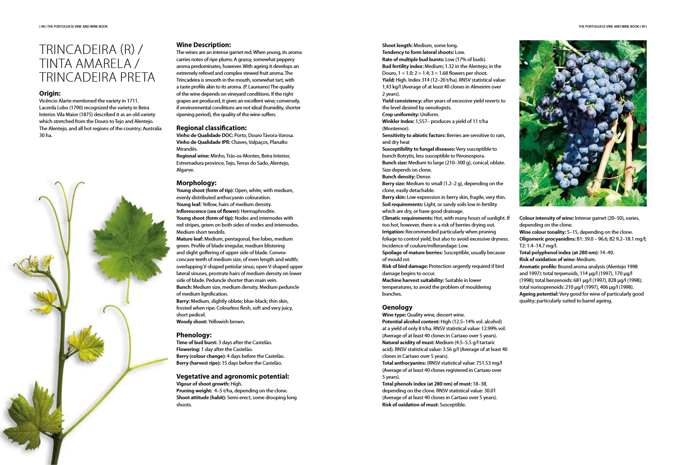
Text · Pages 48–49
TRINCADEIRA (R) / TINTA AMARELA / TRINCADEIRA PRETA Origin: Vicêncio Alarte mentioned the variety in 1711. Lacerda Lobo (1790) recognized the variety in Beira Interior. Vila Maior (1875) described it as an old variety which stretched from the Douro to Tejo and Alentejo. The Alentejo, and all hot regions of the country; Australia 30 ha.
Wine Description: The wines are an intense garnet red. When young, its aroma carries notes of ripe plums. A grassy, somewhat peppery aroma predominates, however. With ageing it develops an extremely refined and complex stewed fruit aroma. The Trincadeira is smooth in the mouth, somewhat tart, with a taste profile akin to its aroma. (P. Laureano) The quality of the wine depends on vineyard conditions. If the right grapes are produced, it gives an excellent wine; conversely, if environmental conditions are not ideal (humidity, shorter ripening period), the quality of the wine suffers. Regional classification: Vinho de Qualidade DOC: Porto, Douro Távora-Varosa. Vinho de Qualidade IPR: Chaves, Valpaços, Planalto Mirandês. Regional wine: Minho, Trás-os-Montes, Beira Interior, Estremadura province, Tejo, Terras do Sado, Alentejo, Algarve. Morphology: Young shoot (form of tip): Open, white, with medium, evenly distributed anthocyanin colouration. Young leaf: Yellow, hairs of medium density. Inflorescence (sex of flower): Hermaphrodite. Young shoot (form of tip): Nodes and internodes with red stripes, green on both sides of nodes and internodes. Medium short tendrils. Mature leaf: Medium, pentagonal, five lobes, medium green. Profile of blade irregular, medium blistering and slight goffering of upper side of blade. Convexconcave teeth of medium size, of even length and width; overlapping V-shaped petiolar sinus; open V-shaped upper lateral sinuses, prostrate hairs of medium density on lower side of blade. Peduncle shorter than main vein. Bunch: Medium size, medium density. Medium peduncle of medium lignification. Berry: Medium, slightly oblate; blue-black; thin skin, frosted when ripe. Colourless flesh, soft and very juicy, short pedicel. Woody shoot: Yellowish brown. Phenology: Time of bud burst: 3 days after the Castelão. Flowering: 1 day after the Castelão. Berry (colour change): 4 days before the Castelão. Berry (harvest ripe): 15 days before the Castelão. Vegetative and agronomic potential: Vigour of shoot growth: High. Pruning weight: 4–5 t/ha, depending on the clone. Shoot attitude (habit): Semi-erect, some drooping long shoots.
Shoot length: Medium, some long. Tendency to form lateral shoots: Low. Rate of multiple bud bursts: Low (17% of buds). Bud fertility index: Medium; 1.32 in the Alentejo; in the Douro, 1 = 1.0; 2 = 1.4; 3 = 1.68 flowers per shoot. Yield: High. Index 314 (12–20 t/ha). RNSV statistical value: 1,43 kg/l (Average of at least 40 clones in Almeirim over 2 years). Yield consistency: after years of excessive yield reverts to the level desired by oenologists. Crop uniformity: Uniform. Winkler Index: 1,557– produces a yield of 11 t/ha (Montemor). Sensitivity to abiotic factors: Berries are sensitive to rain, and dry heat Susceptibility to fungal diseases: Very susceptible to bunch Botrytis, less susceptible to Peronospora. Bunch size: Medium to large (210–300 g), conical, oblate. Size depends on clone. Bunch density: Dense. Berry size: Medium to small (1.2–2 g), depending on the clone, easily detachable. Berry skin: Low expression in berry skin, fragile, very thin. Soil requirements: Light, or sandy soils low in fertility which are dry, or have good drainage. Climatic requirements: Hot, with many hours of sunlight. If too hot, however, there is a risk of berries drying out. Irrigation: Recommended particularly when pruning foliage to control yield, but also to avoid excessive dryness. Incidence of coulure/millerandage: Low. Spoilage of mature berries: Susceptible, usually because of mould rot. Risk of bird damage: Protection urgently required if bird damage begins to occur. Machine harvest suitability: Suitable in lower temperatures, to avoid the problem of mouldering bunches. Oenology Wine type: Quality wine, dessert wine. Potential alcohol content: High (12.5–14% vol. alcohol) at a yield of only 8 t/ha. RNSV statistical value: 12.99% vol. (Average of at least 40 clones in Cartaxo over 5 years). Natural acidity of must: Medium (4.5–5.5 g/l tartaric acid). RNSV statistical value: 3.56 g/l (Average of at least 40 clones in Cartaxo over 5 years). Total anthocyanins: (RNSV statistical value: 751.53 mg/l (Average of at least 40 clones registered in Cartaxo over 5 years). Total phenols index (at 280 nm) of must: 18–38, depending on the clone. RNSV statistical value: 30.01 (Average of at least 40 clones in Cartaxo over 5 years). Risk of oxidation of must: Susceptible.
Colour intensity of wine: Intense garnet (20–50), varies, depending on the clone. Wine colour tonality: 5–15, depending on the clone. Oligomeric procyanidins: B1: 39.0 – 96.6; B2 9.2–18.1 mg/l; T2: 1.4–14.7 mg/l. Total polyphenol index (at 280 nm): 14–40. Risk of oxidation of wine: Medium. Aromatic profile: Bound aroma analysis (Alentejo 1998 and 1997): total terpenoids, 114 μg/l (1997), 170 μg/l (1998); total benzenoids: 681 μg/l (1997), 828 μg/l (1998); total norisoprenoids: 210 μg/l (1997), 406 μg/l (1998). Ageing potential: Very good for wine of particularly good quality; particularly suited to barrel ageing.
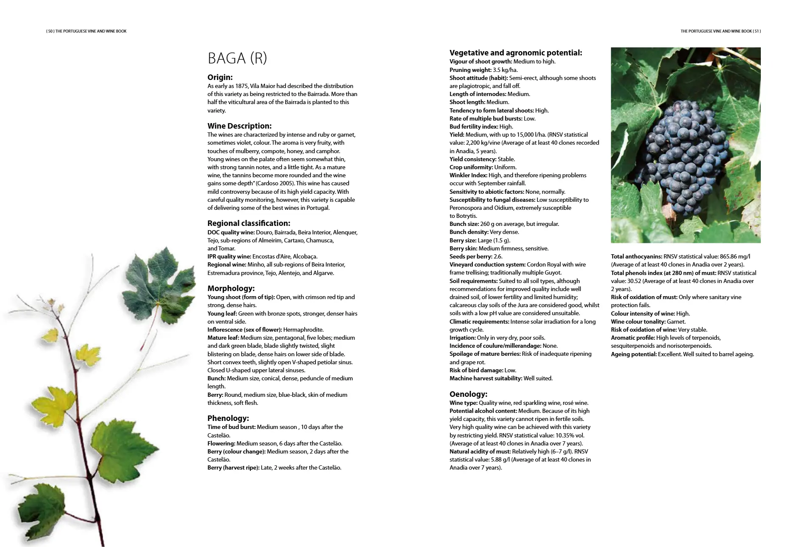
Text · Pages 50–51
BAGA (R) Origin: As early as 1875, Vila Maior had described the distribution of this variety as being restricted to the Bairrada. More than half the viticultural area of the Bairrada is planted to this variety. Wine Description: The wines are characterized by intense and ruby or garnet, sometimes violet, colour. The aroma is very fruity, with touches of mulberry, compote, honey, and camphor. Young wines on the palate often seem somewhat thin, with strong tannin notes, and a little tight. As a mature wine, the tannins become more rounded and the wine gains some depth” (Cardoso 2005). This wine has caused mild controversy because of its high yield capacity. With careful quality monitoring, however, this variety is capable of delivering some of the best wines in Portugal. Regional classification: DOC quality wine: Douro, Bairrada, Beira Interior, Alenquer, Tejo, sub-regions of Almeirim, Cartaxo, Chamusca, and Tomar. IPR quality wine: Encostas d'Aire, Alcobaça. Regional wine: Minho, all sub-regions of Beira Interior, Estremadura province, Tejo, Alentejo, and Algarve. Morphology: Young shoot (form of tip): Open, with crimson red tip and strong, dense hairs. Young leaf: Green with bronze spots, stronger, denser hairs on ventral side. Inflorescence (sex of flower): Hermaphrodite. Mature leaf: Medium size, pentagonal, five lobes; medium and dark green blade, blade slightly twisted, slight blistering on blade, dense hairs on lower side of blade. Short convex teeth, slightly open V-shaped petiolar sinus. Closed U-shaped upper lateral sinuses. Bunch: Medium size, conical, dense, peduncle of medium length. Berry: Round, medium size, blue-black, skin of medium thickness, soft flesh. Phenology: Time of bud burst: Medium season , 10 days after the Castelão. Flowering: Medium season, 6 days after the Castelão. Berry (colour change): Medium season, 2 days after the Castelão. Berry (harvest ripe): Late, 2 weeks after the Castelão.
Vegetative and agronomic potential: Vigour of shoot growth: Medium to high. Pruning weight: 3.5 kg/ha. Shoot attitude (habit): Semi-erect, although some shoots are plagiotropic, and fall off. Length of internodes: Medium. Shoot length: Medium. Tendency to form lateral shoots: High. Rate of multiple bud bursts: Low. Bud fertility index: High. Yield: Medium, with up to 15,000 l/ha. (RNSV statistical value: 2,200 kg/vine (Average of at least 40 clones recorded in Anadia, 5 years). Yield consistency: Stable. Crop uniformity: Uniform. Winkler Index: High, and therefore ripening problems occur with September rainfall. Sensitivity to abiotic factors: None, normally. Susceptibility to fungal diseases: Low susceptibility to Peronospora and Oidium, extremely susceptible to Botrytis. Bunch size: 260 g on average, but irregular. Bunch density: Very dense. Berry size: Large (1.5 g). Berry skin: Medium firmness, sensitive. Seeds per berry: 2.6. Vineyard conduction system: Cordon Royal with wire frame trellising; traditionally multiple Guyot. Soil requirements: Suited to all soil types, although recommendations for improved quality include well drained soil, of lower fertility and limited humidity; calcareous clay soils of the Jura are considered good, whilst soils with a low pH value are considered unsuitable. Climatic requirements: Intense solar irradiation for a long growth cycle. Irrigation: Only in very dry, poor soils. Incidence of coulure/millerandage: None. Spoilage of mature berries: Risk of inadequate ripening and grape rot. Risk of bird damage: Low. Machine harvest suitability: Well suited. Oenology: Wine type: Quality wine, red sparkling wine, rosé wine. Potential alcohol content: Medium. Because of its high yield capacity, this variety cannot ripen in fertile soils. Very high quality wine can be achieved with this variety by restricting yield. RNSV statistical value: 10.35% vol. (Average of at least 40 clones in Anadia over 7 years). Natural acidity of must: Relatively high (6–7 g/l). RNSV statistical value: 5.88 g/l (Average of at least 40 clones in Anadia over 7 years).
Total anthocyanins: RNSV statistical value: 865.86 mg/l (Average of at least 40 clones in Anadia over 2 years). Total phenols index (at 280 nm) of must: RNSV statistical value: 30.52 (Average of at least 40 clones in Anadia over 2 years). Risk of oxidation of must: Only where sanitary vine protection fails. Colour intensity of wine: High. Wine colour tonality: Garnet. Risk of oxidation of wine: Very stable. Aromatic profile: High levels of terpenoids, sesquiterpenoids and norisoterpenoids. Ageing potential: Excellent. Well suited to barrel ageing.
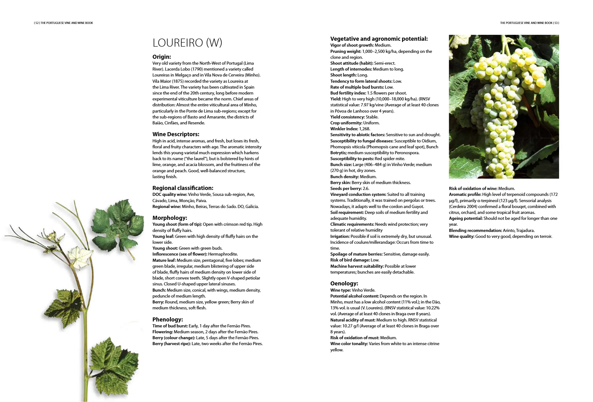
Text · Pages 52–53
LOUREIRO (W) Origin: Very old variety from the North-West of Portugal (Lima River). Lacerda Lobo (1790) mentioned a variety called Loureiras in Melgaço and in Vila Nova de Cerveira (Minho). Vila Maior (1875) recorded the variety as Loureira at the Lima River. The variety has been cultivated in Spain since the end of the 20th century, long before modern experimental viticulture became the norm. Chief areas of distribution: Almost the entire viticultural area of Minho, particularly in the Ponte de Lima sub-regions; except for the sub-regions of Basto and Amarante, the districts of Baião, Cinfães, and Resende. Wine Descriptors: High in acid, intense aromas, and fresh, but loses its fresh, floral and fruity characters with age. The aromatic intensity lends this young varietal much expression which harkens back to its name (“the laurel”), but is bolstered by hints of lime, orange, and acacia blossom, and the fruitiness of the orange and peach. Good, well-balanced structure, lasting finish. Regional classification: DOC quality wine: Vinho Verde, Sousa sub-region, Ave, Cávado, Lima, Monção, Paiva. Regional wine: Minho, Beiras, Terras do Sado. DO, Galicia. Morphology: Young shoot (form of tip): Open with crimson red tip. High density of fluffy hairs. Young leaf: Green with high density of fluffy hairs on the lower side. Young shoot: Green with green buds. Inflorescence (sex of flower): Hermaphrodite. Mature leaf: Medium size, pentagonal, five lobes; medium green blade, irregular, medium blistering of upper side of blade, fluffy hairs of medium density on lower side of blade, short convex teeth. Slightly open V-shaped petiolar sinus. Closed U-shaped upper lateral sinuses. Bunch: Medium size, conical, with wings, medium density, peduncle of medium length. Berry: Round, medium size, yellow green; Berry skin of medium thickness, soft flesh. Phenology: Time of bud burst: Early, 1 day after the Fernão Pires. Flowering: Medium season, 2 days after the Fernão Pires. Berry (colour change): Late, 5 days after the Fernão Pires. Berry (harvest ripe): Late, two weeks after the Fernão Pires.
Vegetative and agronomic potential: Vigor of shoot growth: Medium. Pruning weight: 1,000–2,500 kg/ha, depending on the clone and region. Shoot attitude (habit): Semi-erect. Length of internodes: Medium to long. Shoot length: Long. Tendency to form lateral shoots: Low. Rate of multiple bud bursts: Low. Bud fertility index: 1.5 flowers per shoot. Yield: High to very high (10,000–18,000 kg/ha). (RNSV statistical value: 7.97 kg/vine (Average of at least 40 clones in Póvoa de Lanhoso over 4 years). Yield consistency: Stable. Crop uniformity: Uniform. Winkler Index: 1,268. Sensitivity to abiotic factors: Sensitive to sun and drought. Susceptibility to fungal diseases: Susceptible to Oidium, Phomopsis viticola (Phomopsis cane and leaf spot), Bunch Botrytis; medium susceptibility to Peronospora. Susceptibility to pests: Red spider mite. Bunch size: Large (406–484 g) in Vinho Verde; medium (270 g) in hot, dry zones. Bunch density: Medium. Berry skin: Berry skin of medium thickness. Seeds per berry: 2.6. Vineyard conduction system: Suited to all training systems. Traditionally, it was trained on pergolas or trees. Nowadays, it adapts well to the cordon and Guyot. Soil requirement: Deep soils of medium fertility and adequate humidity. Climatic requirements: Needs wind protection; very tolerant of relative humidity Irrigation: Possible if soil is extremely dry, but unusual. Incidence of coulure/millerandage: Occurs from time to time. Spoilage of mature berries: Sensitive, damage easily. Risk of bird damage: Low. Machine harvest suitability: Possible at lower temperatures; bunches are easily detachable. Oenology: Wine type: Vinho Verde. Potential alcohol content: Depends on the region. In Minho, must has a low alcohol content (11% vol.); in the Dão, 13% vol. is usual (V. Loureiro). (RNSV statistical value: 10.22% vol. (Average of at least 40 clones in Braga over 8 years). Natural acidity of must: Medium to high. RNSV statistical value: 10.27 g/l (Average of at least 40 clones in Braga over 8 years). Risk of oxidation of must: Medium. Wine color tonality: Varies from white to an intense citrine yellow.
Risk of oxidation of wine: Medium. Aromatic profile: High level of terpenoid compounds (172 μg/l), primarily α-terpineol (123 μg/l). Sensorial analysis (Cerdeira 2004) confirmed a floral bouqet, combined with citrus, orchard, and some tropical fruit aromas. Ageing potential: Should not be aged for longer than one year. Blending recommendation: Arinto, Trajadura. Wine quality: Good to very good, depending on terroir.
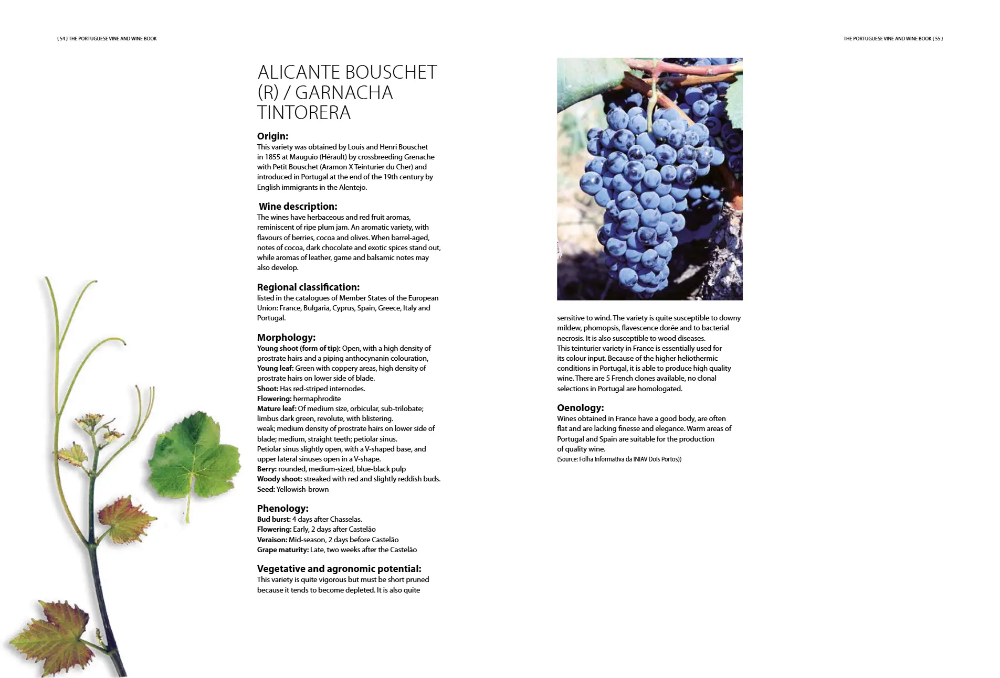
Text · Pages 54–55
ALICANTE BOUSCHET (R) / GARNACHA TINTORERA Origin: This variety was obtained by Louis and Henri Bouschet in 1855 at Mauguio (Hérault) by crossbreeding Grenache with Petit Bouschet (Aramon X Teinturier du Cher) and introduced in Portugal at the end of the 19th century by English immigrants in the Alentejo. Wine description: The wines have herbaceous and red fruit aromas, reminiscent of ripe plum jam. An aromatic variety, with flavours of berries, cocoa and olives. When barrel-aged, notes of cocoa, dark chocolate and exotic spices stand out, while aromas of leather, game and balsamic notes may also develop. Regional classification: listed in the catalogues of Member States of the European Union: France, Bulgaria, Cyprus, Spain, Greece, Italy and Portugal. Morphology: Young shoot (form of tip): Open, with a high density of prostrate hairs and a piping anthocynanin colouration, Young leaf: Green with coppery areas, high density of prostrate hairs on lower side of blade. Shoot: Has red-striped internodes. Flowering: hermaphrodite Mature leaf: Of medium size, orbicular, sub-trilobate; limbus dark green, revolute, with blistering. weak; medium density of prostrate hairs on lower side of blade; medium, straight teeth; petiolar sinus. Petiolar sinus slightly open, with a V-shaped base, and upper lateral sinuses open in a V-shape. Berry: rounded, medium-sized, blue-black pulp Woody shoot: streaked with red and slightly reddish buds. Seed: Yellowish-brown Phenology: Bud burst: 4 days after Chasselas. Flowering: Early, 2 days after Castelão Veraison: Mid-season, 2 days before Castelão Grape maturity: Late, two weeks after the Castelão Vegetative and agronomic potential: This variety is quite vigorous but must be short pruned because it tends to become depleted. It is also quite
sensitive to wind. The variety is quite susceptible to downy mildew, phomopsis, flavescence dorée and to bacterial necrosis. It is also susceptible to wood diseases. This teinturier variety in France is essentially used for its colour input. Because of the higher heliothermic conditions in Portugal, it is able to produce high quality wine. There are 5 French clones available, no clonal selections in Portugal are homologated. Oenology: Wines obtained in France have a good body, are often flat and are lacking finesse and elegance. Warm areas of Portugal and Spain are suitable for the production of quality wine. (Source: Folha informativa da INIAV Dois Portos))
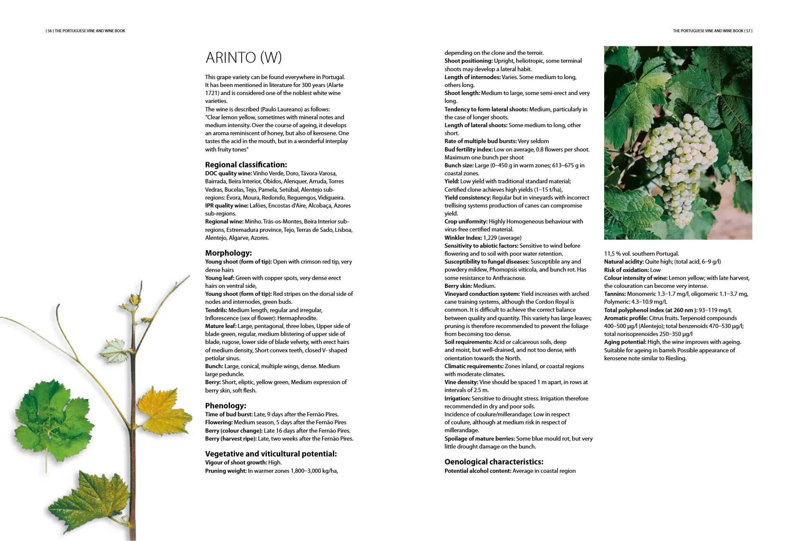
Text · Pages 56–57
ARINTO (W) This grape variety can be found everywhere in Portugal. It has been mentioned in literature for 300 years (Alarte 1721) and is considered one of the noblest white wine varieties. The wine is described (Paulo Laureano) as follows: “Clear lemon yellow, sometimes with mineral notes and medium intensity. Over the course of ageing, it develops an aroma reminiscent of honey, but also of kerosene. One tastes the acid in the mouth, but in a wonderful interplay with fruity tones” Regional classification: DOC quality wine: Vinho Verde, Doro, Távora-Varosa, Bairrada, Beira Interior, Óbidos, Alenquer, Arruda, Torres Vedras, Bucelas, Tejo, Pamela, Setúbal, Alentejo subregions: Évora, Moura, Redondo, Reguengos, Vidigueira. IPR quality wine: Lafões, Encostas d'Aire, Alcobaça, Azores sub-regions. Regional wine: Minho. Trás-os-Montes, Beira Interior subregions, Estremadura province, Tejo, Terras de Sado, Lisboa, Alentejo, Algarve, Azores. Morphology: Young shoot (form of tip): Open with crimson red tip, very dense hairs Young leaf: Green with copper spots, very dense erect hairs on ventral side, Young shoot (form of tip): Red stripes on the dorsal side of nodes and internodes, green buds. Tendrils: Medium length, regular and irregular, Inflorescence (sex of flower): Hermaphrodite. Mature leaf: Large, pentagonal, three lobes, Upper side of blade green, regular, medium blistering of upper side of blade, rugose, lower side of blade velvety, with erect hairs of medium density, Short convex teeth, closed V- shaped petiolar sinus. Bunch: Large, conical, multiple wings, dense. Medium large peduncle. Berry: Short, eliptic, yellow green, Medium expression of berry skin, soft flesh. Phenology: Time of bud burst: Late, 9 days after the Fernão Pires. Flowering: Medium season, 5 days after the Fernão Pires Berry (colour change): Late 16 days after the Fernão Pires. Berry (harvest ripe): Late, two weeks after the Fernão Pires. Vegetative and viticultural potential: Vigour of shoot growth: High. Pruning weight: In warmer zones 1,800–3,000 kg/ha,
depending on the clone and the terroir. Shoot positioning: Upright, heliotropic, some terminal shoots may develop a lateral habit. Length of internodes: Varies. Some medium to long, others long. Shoot length: Medium to large, some semi-erect and very long. Tendency to form lateral shoots: Medium, particularly in the case of longer shoots. Length of lateral shoots: Some medium to long, other short. Rate of multiple bud bursts: Very seldom Bud fertility index: Low on average, 0.8 flowers per shoot. Maximum one bunch per shoot Bunch size: Large (0–450 g in warm zones; 613–675 g in coastal zones. Yield: Low yield with traditional standard material; Certified clone achieves high yields (1–15 t/ha), Yield consistency: Regular but in vineyards with incorrect trellising systems production of canes can compromise yield. Crop uniformity: Highly Homogeneous behaviour with virus-free certified material. Winkler Index: 1,229 (average) Sensitivity to abiotic factors: Sensitive to wind before flowering and to soil with poor water retention. Susceptibility to fungal diseases: Susceptible any and powdery mildew, Phomopsis vitícola, and bunch rot. Has some resistance to Anthracnose. Berry skin: Medium. Vineyard conduction system: Yield increases with arched cane training systems, although the Cordon Royal is common. It is difficult to achieve the correct balance between quality and quantity. This variety has large leaves; pruning is therefore recommended to prevent the foliage from becoming too dense. Soil requirements: Acid or calcareous soils, deep and moist, but well-drained, and not too dense, with orientation towards the North. Climatic requirements: Zones inland, or coastal regions with moderate climates. Vine density: Vine should be spaced 1 m apart, in rows at intervals of 2.5 m. Irrigation: Sensitive to drought stress. Irrigation therefore recommended in dry and poor soils. Incidence of coulure/millerandage: Low in respect of coulure, although at medium risk in respect of millerandage. Spoilage of mature berries: Some blue mould rot, but very little drought damage on the bunch. Oenological characteristics: Potential alcohol content: Average in coastal region
11,5 % vol. southern Portugal. Natural acidity: Quite high; (total acid, 6–9 g/l) Risk of oxidation: Low Colour intensity of wine: Lemon yellow; with late harvest, the colouration can become very intense. Tannins: Monomeric 1.3–1.7 mg/l, oligomeric 1.1–3.7 mg, Polymeric: 4.3–10.9 mg/L Total polyphenol index (at 260 nm ): 93–119 mg/L Aromatic profile: Citrus fruits. Terpenoid compounds 400–500 µg/l (Alentejo); total benzenoids 470–530 µg/l; total norisoprenoídes 250–350 µg/l Aging potential: High, the wine improves with ageing. Suitable for ageing in barrels Possible appearance of kerosene note similar to Riesling.
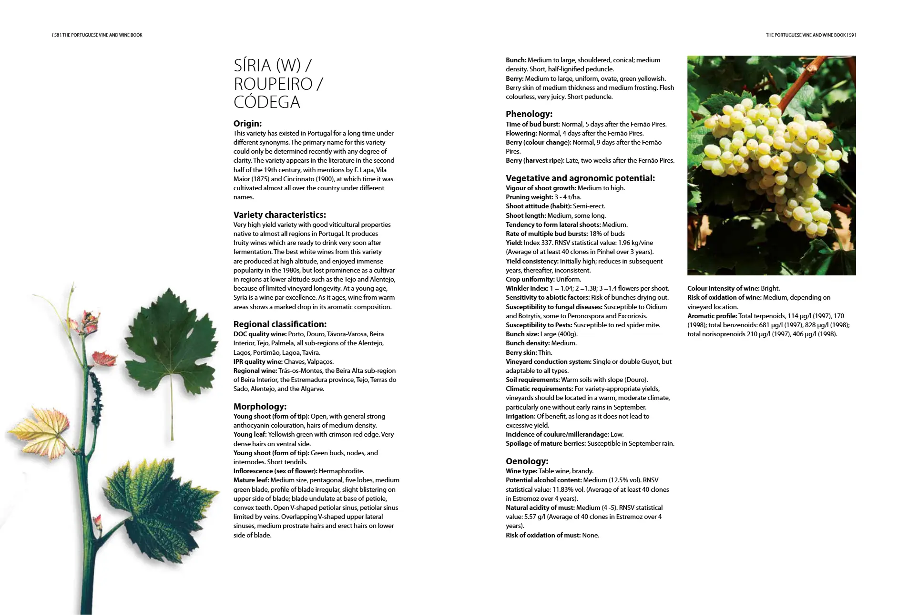
Text · Pages 58–59
SÍRIA (W) / ROUPEIRO / CÓDEGA Origin: This variety has existed in Portugal for a long time under different synonyms. The primary name for this variety could only be determined recently with any degree of clarity. The variety appears in the literature in the second half of the 19th century, with mentions by F. Lapa, Vila Maior (1875) and Cincinnato (1900), at which time it was cultivated almost all over the country under different names. Variety characteristics: Very high yield variety with good viticultural properties native to almost all regions in Portugal. It produces fruity wines which are ready to drink very soon after fermentation. The best white wines from this variety are produced at high altitude, and enjoyed immense popularity in the 1980s, but lost prominence as a cultivar in regions at lower altitude such as the Tejo and Alentejo, because of limited vineyard longevity. At a young age, Syria is a wine par excellence. As it ages, wine from warm areas shows a marked drop in its aromatic composition. Regional classification: DOC quality wine: Porto, Douro, Távora-Varosa, Beira Interior, Tejo, Palmela, all sub-regions of the Alentejo, Lagos, Portimão, Lagoa, Tavira. IPR quality wine: Chaves, Valpaços. Regional wine: Trás-os-Montes, the Beira Alta sub-region of Beira Interior, the Estremadura province, Tejo, Terras do Sado, Alentejo, and the Algarve. Morphology: Young shoot (form of tip): Open, with general strong anthocyanin colouration, hairs of medium density. Young leaf: Yellowish green with crimson red edge. Very dense hairs on ventral side. Young shoot (form of tip): Green buds, nodes, and internodes. Short tendrils. Inflorescence (sex of flower): Hermaphrodite. Mature leaf: Medium size, pentagonal, five lobes, medium green blade, profile of blade irregular, slight blistering on upper side of blade; blade undulate at base of petiole, convex teeth. Open V-shaped petiolar sinus, petiolar sinus limited by veins. Overlapping V-shaped upper lateral sinuses, medium prostrate hairs and erect hairs on lower side of blade.
Bunch: Medium to large, shouldered, conical; medium density. Short, half-lignified peduncle. Berry: Medium to large, uniform, ovate, green yellowish. Berry skin of medium thickness and medium frosting. Flesh colourless, very juicy. Short peduncle. Phenology: Time of bud burst: Normal, 5 days after the Fernão Pires. Flowering: Normal, 4 days after the Fernão Pires. Berry (colour change): Normal, 9 days after the Fernão Pires. Berry (harvest ripe): Late, two weeks after the Fernão Pires. Vegetative and agronomic potential: Vigour of shoot growth: Medium to high. Pruning weight: 3 - 4 t/ha. Shoot attitude (habit): Semi-erect. Shoot length: Medium, some long. Tendency to form lateral shoots: Medium. Rate of multiple bud bursts: 18% of buds Yield: Index 337. RNSV statistical value: 1.96 kg/vine (Average of at least 40 clones in Pinhel over 3 years). Yield consistency: Initially high; reduces in subsequent years, thereafter, inconsistent. Crop uniformity: Uniform. Winkler Index: 1 = 1.04; 2 =1.38; 3 =1.4 flowers per shoot. Sensitivity to abiotic factors: Risk of bunches drying out. Susceptibility to fungal diseases: Susceptible to Oidium and Botrytis, some to Peronospora and Excoriosis. Susceptibility to Pests: Susceptible to red spider mite. Bunch size: Large (400g). Bunch density: Medium. Berry skin: Thin. Vineyard conduction system: Single or double Guyot, but adaptable to all types. Soil requirements: Warm soils with slope (Douro). Climatic requirements: For variety-appropriate yields, vineyards should be located in a warm, moderate climate, particularly one without early rains in September. Irrigation: Of benefit, as long as it does not lead to excessive yield. Incidence of coulure/millerandage: Low. Spoilage of mature berries: Susceptible in September rain. Oenology: Wine type: Table wine, brandy. Potential alcohol content: Medium (12.5% vol). RNSV statistical value: 11.83% vol. (Average of at least 40 clones in Estremoz over 4 years). Natural acidity of must: Medium (4 -5). RNSV statistical value: 5.57 g/l (Average of 40 clones in Estremoz over 4 years). Risk of oxidation of must: None.
Colour intensity of wine: Bright. Risk of oxidation of wine: Medium, depending on vineyard location. Aromatic profile: Total terpenoids, 114 μg/l (1997), 170 (1998); total benzenoids: 681 μg/l (1997), 828 μg/l (1998); total norisoprenoids 210 μg/l (1997), 406 μg/l (1998).
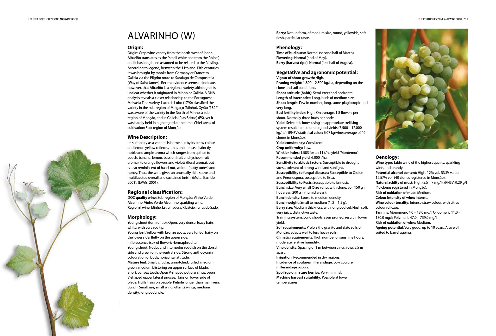
Text · Pages 60–61
ALVARINHO (W) Origin: Origin: Grapevine variety from the north-west of Iberia. Albariño translates as the "small white one from the Rhine", and it has long been assumed to be related to the Riesling. According to legend, between the 11th and 13th centuries it was brought by monks from Germany or France to Galicia via the Pilgrim route to Santiago de Compostella (Way of Saint James). Recent evidence seems to indicate, however, that Albariño is a regional variety, although it is unclear whether it originated in Minho or Galicia. A DNA analysis reveals a closer relationship to the Portuguese Malvasia Fina variety. Lacerda Lobo (1790) classified the variety in the sub-region of Melgaço (Minho). Gyrão (1822) was aware of the variety in the North of Minho, a subregion of Monção, and in Galicia (Rias Baixas) (ES), yet it was hardly held in high regard at the time. Chief areas of cultivation: Sub-region of Monção. Wine Description: Its suitability as a varietal is borne out by its straw colour and lemon yellow reflexes. It has an intense, distinctly noble and ample aroma which ranges from quince to peach, banana, lemon, passion fruit and lychee (fruit aroma), to orange flowers and violets (floral aroma), but is also reminiscent of hazel nut, walnut (nutty tones) and honey. Thus, the wine gives an unusually rich, suave and multifaceted overall and sustained finish. (Mota, Garrido, 2001); (EVAG, 2001). Regional classification: DOC quality wine: Sub-region of Monção: Vinho Verde Alvarinho, Vinho Verde Alvarinho sparkling wine. Regional wine: Minho, Estremadura, Ribatejo, Terras do Sado. Morphology: Young shoot (form of tip): Open, very dense, fuzzy hairs, white, with very red tip. Young leaf: Yellow with bronze spots, very furled, hairy on the lower side, fluffy on the upper side. Inflorescence (sex of flower): Hermaphrodite. Young shoot: Nodes and internodes reddish on the dorsal side and green on the ventral side. Strong anthocyanin colouration of buds, horizontal attitude. Mature leaf: Small, circular, unnotched, furled, medium green, medium blistering on upper surface of blade. Short, convex teeth. Open V-shaped petiolar sinus, open V-shaped upper lateral sinuses. Hairs on lower side of blade. Fluffy hairs on petiole. Petiole longer than main vein. Bunch: Small size, small wing, often 2 wings, medium density, long peduncle.
Berry: Not uniform, of medium size, round, yellowish, soft flesh, particular taste. Phenology: Time of bud burst: Normal (second half of March). Flowering: Normal (end of May). Berry (harvest ripe): Normal (first half of August). Vegetative and agronomic potential: Vigour of shoot growth: High. Pruning weight: 1,800 – 2,500 kg/ha, depending on the clone and soil conditions. Shoot attitude (habit): Semi-erect and horizontal. Length of internodes: Long, buds of medium size. Shoot length: Few in number, long, some plagiotropic and very long. Bud fertility index: High. On average, 1.8 flowers per shoot. Normally three buds per node. Yield: Selected clones using an appropriate trellising system result in medium to good yields (7,500 – 12,000 kg/ha). (RNSV statistical value: 6.07 kg/vine; average of 40 clones in Monção). Yield consistency: Consistent. Crop uniformity: Low. Winkler Index: 1,583 for an 11 t/ha yield (Montemor). Recommended yield: 6,000 l/ha. Sensitivity to abiotic factors: Susceptible to drought stress, tolerant of strong wind and sunlight. Susceptibility to fungal diseases: Susceptible to Oidium and Peronospora, susceptible to Esca. Susceptibility to Pests: Susceptible to Erinosis. Bunch size: Very small (Size varies with clone; 90 –150 g in hot areas, 200 g in humid areas). Bunch density: Loose to medium density. Bunch weight: Small to medium (1. 2 – 1.3 g). Berry size: Medium thickness, with long pedicel. Flesh soft, very juicy, distinctive taste. Training system: Long shoots, spur pruned, result in lower yield. Soil requirements: Prefers the granite and slate soils of Monção, adapts well to less heavy soils. Climatic requirements: High number of sunshine hours, moderate relative humidity. Vine density: Spacing of 1 m between vines, rows 2.5 m apart. Irrigation: Recommended in dry regions. Incidence of coulure/millerandage: Low coulure; millerandage occurs. Spoilage of mature berries: Very minimal. Machine harvest suitability: Possible at lower temperatures.
Oenology: Wine type: Table wine of the highest quality, sparkling wine, and brandy. Potential alcohol content: High, 12% vol. RNSV value: 12.57% vol. (40 clones registered in Monção). Natural acidity of must: High (5.5 – 7 mg/l). (RNSV: 9.29 g/l (40 clones registered in Monção). Risk of oxidation of must: Medium. Colour intensity of wine: Intense. Wine colour tonality: Intense straw colour, with citrus colour reflexes. Tannins: Monomeric 4.0 – 18.0 mg/l; Oligomeric 11.0 – 180.0 mg/l; Polymeric 47.0 – 739.0 mg/l. Risk of oxidation of wine: Medium. Ageing potential: Very good: up to 10 years. Also well suited to barrel ageing.
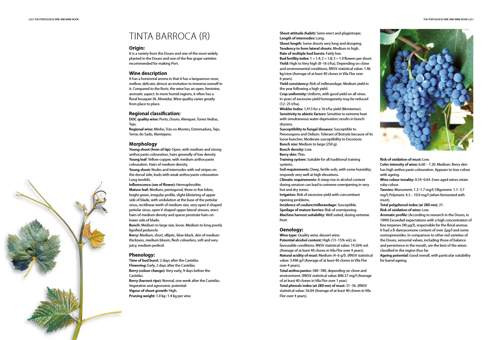
Text · Pages 62–63
TINTA BARROCA (R) Origin: It is a variety from the Douro and one of the most widely planted in the Douro and one of the five grape varieties recommended for making Port. Wine description It has a horizontal aroma in that it has a languorous nose, mellow, delicate; almost an invitation to immerse oneself in it. Compared to the Roriz, the wine has an open, feminine, aromatic aspect. In more humid regions, it often has a floral bouquet (N. Almeida). Wine quality varies greatly from place to place. Regional classification: DOC quality wine: Porto, Douro, Alenquer, Torres Vedras, Tejo. Regional wine: Minho, Trás-os-Montes, Estremadura, Tejo, Terras do Sado, Alentejano. Morphology Young shoot (form of tip): Open, with medium and strong anthocyanin colouration, hairs generally of low density. Young leaf: Yellow-copper, with medium anthocyanin colouration. Hairs of medium density. Young shoot: Nodes and internodes with red stripes on the dorsal side, buds with weak anthocyanin colouration. Long tendrils. Inflorescence (sex of flower): Hermaphrodite. Mature leaf: Medium, pentagonal, three or five lobes, bright green, irregular profile, slight blistering of upper side of blade, with undulation at the base of the petiolar sinus, rectilinear teeth of medium size, very open V-shaped petiolar sinus, open V-shaped upper lateral sinuses, erect hairs of medium density and sparse prostrate hairs on lower side of blade. Bunch: Medium to large size, loose. Medium to long poorly lignified peduncle. Berry: Medium, short, elliptic, blue-black, skin of medium thickness, medium bloom, flesh colourless, soft and very juicy, medium pedicel. Phenology: Time of bud burst: 2 days after the Castelão. Flowering: Early, 2 days after the Castelão. Berry (colour change): Very early, 9 days before the Castelão. Berry (harvest ripe): Normal, one week after the Castelão. Vegetative and agronomic potential: Vigour of shoot growth: High. Pruning weight: 1.0 kg–1.4 kg per vine.
Shoot attitude (habit): Semi-erect and plagiotropic. Length of internodes: Long. Shoot length: Some shoots very long and drooping. Tendency to form lateral shoots: Medium to high. Rate of multiple bud bursts: Fairly low. Bud fertility index: 1 = 1.4; 2 = 1.8; 3 = 1.9 flowers per shoot. Yield: High to Very high (8–16 t/ha), Depending on clone and environmental conditions. RNSV statistical value: 1.46 kg/vine (Average of at least 40 clones in Vila Flor over 6 years). Yield consistency: Risk of millerandage. Medium yield in the year following a high yield. Crop uniformity: Uniform, with good yield on all vines. In years of excessive yield homogeneity may be reduced (12–25 t/ha). Winkler Index: 1,413 for a 16 t/ha yield (Montemor). Sensitivity to abiotic factors: Sensitive to extreme heat with simultaneous water deprivation; results in bunch dryness. Susceptibility to fungal diseases: Susceptible to Peronospora and Oidium. Tolerant of Botrytis because of its loose bunches. Moderate susceptibility to Excoriosis. Bunch size: Medium to large (250 g). Bunch density: Low. Berry skin: Thin. Training system: Suitable for all traditional training systems. Soil requirements: Deep, fertile soils, with some humidity; responds very well at high elevations. Climatic requirements: A steep rise in alcohol content during veraison can lead to extreme overripening in very hot and dry zones. Irrigation: Risk of excessive yield with concomitant ripening problems. Incidence of coulure/millerandage: Susceptible. Spoilage of mature berries: Risk of overripening. Machine harvest suitability: Well suited, during extreme heat. Oenology: Wine type: Quality wine, dessert wine. Potential alcohol content: High (13–15% vol.) in favourable conditions. RNSV statistical value: 14.56% vol. (Average of at least 40 clones in Vila Flor over 4 years). Natural acidity of must: Medium (4–6 g/l). (RNSV statistical value: 3.496 g/l (Average of at least 40 clones in Vila Flor over 4 years). Total anthocyanins: 580–780, depending on clone and environment. (RNSV statistical value: 806.57 mg/l (Average of at least 40 clones in Vila Flor over 1 year). Total phenols index (at 280 nm) of must: 31–36. (RNSV statistical value: 56.04 (Average of at least 40 clones in Vila Flor over 4 years).
Risk of oxidation of must: Low. Color intensity of wine: 6.60 – 7.20. Medium. Berry skin has high anthocyanin colouration. Appears to lose colour with ageing. Wine colour tonality: 0.54–0.64. Even aged wines retain ruby colour. Tannins: Monomeric 1.3–1.7 mg/l; Oligomeric 1.1–3.7 mg/l; Polymeric 4.3 – 10.9 mg/l (when fermented with must). Total polyphenol index (at 280 nm): 21. Risk of oxidation of wine: Low. Aromatic profile: (According to research in the Douro, in 1999) Exceeded expectations with a high concentration of free terpenes (90 μg/l), responsible for the floral aromas. It had a ß-damascenone content of over 2μg/l and some norisoprenoídes. In comparison to other red varieties of the Douro, sensorial values, including those of balance and persistence in the mouth, are the best of the wines classified in the region thus far. Ageing potential: Good overall, with particular suitability for barrel ageing.
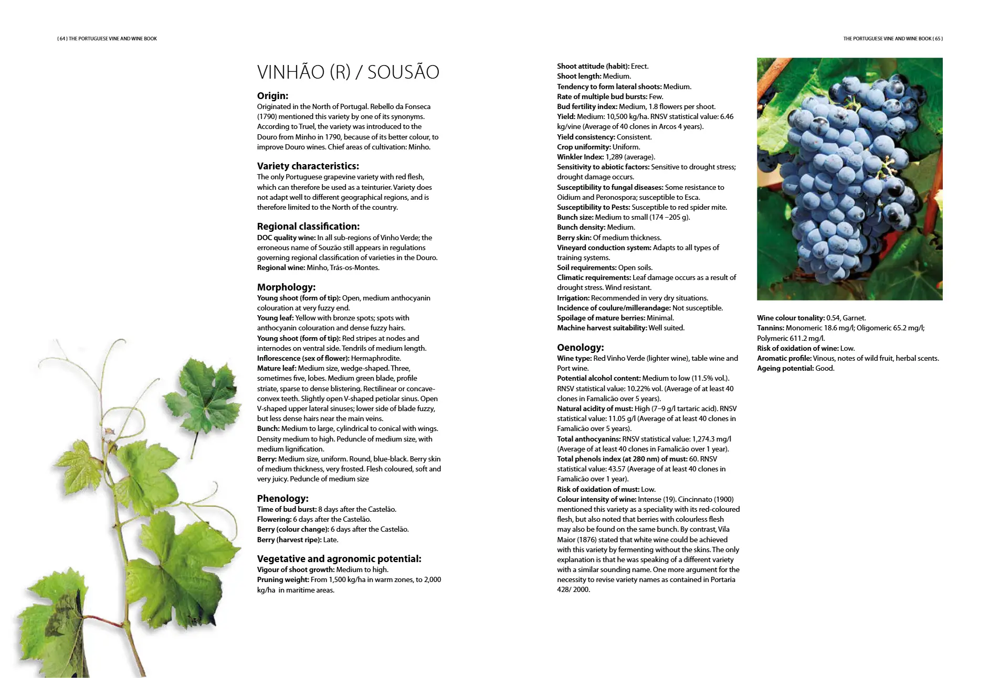
Text · Pages 64–65
VINHÃO (R) / SOUSÃO Origin: Originated in the North of Portugal. Rebello da Fonseca (1790) mentioned this variety by one of its synonyms. According to Truel, the variety was introduced to the Douro from Minho in 1790, because of its better colour, to improve Douro wines. Chief areas of cultivation: Minho. Variety characteristics: The only Portuguese grapevine variety with red flesh, which can therefore be used as a teinturier. Variety does not adapt well to different geographical regions, and is therefore limited to the North of the country. Regional classification: DOC quality wine: In all sub-regions of Vinho Verde; the erroneous name of Souzão still appears in regulations governing regional classification of varieties in the Douro. Regional wine: Minho, Trás-os-Montes. Morphology: Young shoot (form of tip): Open, medium anthocyanin colouration at very fuzzy end. Young leaf: Yellow with bronze spots; spots with anthocyanin colouration and dense fuzzy hairs. Young shoot (form of tip): Red stripes at nodes and internodes on ventral side. Tendrils of medium length. Inflorescence (sex of flower): Hermaphrodite. Mature leaf: Medium size, wedge-shaped. Three, sometimes five, lobes. Medium green blade, profile striate, sparse to dense blistering. Rectilinear or concaveconvex teeth. Slightly open V-shaped petiolar sinus. Open V-shaped upper lateral sinuses; lower side of blade fuzzy, but less dense hairs near the main veins. Bunch: Medium to large, cylindrical to conical with wings. Density medium to high. Peduncle of medium size, with medium lignification. Berry: Medium size, uniform. Round, blue-black. Berry skin of medium thickness, very frosted. Flesh coloured, soft and very juicy. Peduncle of medium size Phenology: Time of bud burst: 8 days after the Castelão. Flowering: 6 days after the Castelão. Berry (colour change): 6 days after the Castelão. Berry (harvest ripe): Late. Vegetative and agronomic potential: Vigour of shoot growth: Medium to high. Pruning weight: From 1,500 kg/ha in warm zones, to 2,000 kg/ha in maritime areas.
Shoot attitude (habit): Erect. Shoot length: Medium. Tendency to form lateral shoots: Medium. Rate of multiple bud bursts: Few. Bud fertility index: Medium, 1.8 flowers per shoot. Yield: Medium: 10,500 kg/ha. RNSV statistical value: 6.46 kg/vine (Average of 40 clones in Arcos 4 years). Yield consistency: Consistent. Crop uniformity: Uniform. Winkler Index: 1,289 (average). Sensitivity to abiotic factors: Sensitive to drought stress; drought damage occurs. Susceptibility to fungal diseases: Some resistance to Oidium and Peronospora; susceptible to Esca. Susceptibility to Pests: Susceptible to red spider mite. Bunch size: Medium to small (174 –205 g). Bunch density: Medium. Berry skin: Of medium thickness. Vineyard conduction system: Adapts to all types of training systems. Soil requirements: Open soils. Climatic requirements: Leaf damage occurs as a result of drought stress. Wind resistant. Irrigation: Recommended in very dry situations. Incidence of coulure/millerandage: Not susceptible. Spoilage of mature berries: Minimal. Machine harvest suitability: Well suited. Oenology: Wine type: Red Vinho Verde (lighter wine), table wine and Port wine. Potential alcohol content: Medium to low (11.5% vol.). RNSV statistical value: 10.22% vol. (Average of at least 40 clones in Famalicão over 5 years). Natural acidity of must: High (7–9 g/l tartaric acid). RNSV statistical value: 11.05 g/l (Average of at least 40 clones in Famalicão over 5 years). Total anthocyanins: RNSV statistical value: 1,274.3 mg/l (Average of at least 40 clones in Famalicão over 1 year). Total phenols index (at 280 nm) of must: 60. RNSV statistical value: 43.57 (Average of at least 40 clones in Famalicão over 1 year). Risk of oxidation of must: Low. Colour intensity of wine: Intense (19). Cincinnato (1900) mentioned this variety as a speciality with its red-coloured flesh, but also noted that berries with colourless flesh may also be found on the same bunch. By contrast, Vila Maior (1876) stated that white wine could be achieved with this variety by fermenting without the skins. The only explanation is that he was speaking of a different variety with a similar sounding name. One more argument for the necessity to revise variety names as contained in Portaria 428/ 2000.
Wine colour tonality: 0.54, Garnet. Tannins: Monomeric 18.6 mg/l; Oligomeric 65.2 mg/l; Polymeric 611.2 mg/l. Risk of oxidation of wine: Low. Aromatic profile: Vinous, notes of wild fruit, herbal scents. Ageing potential: Good.